JM-Orgue
JM-Orgue ist eine virtuelle Pfeifenorgel für Windows, macOS und Linux. Das Programm spielt Hauptwerk- und GrandOrgue-Sample-Sets direkt ab, auch große Surround-Sets und Hauptwerk-Custom-Organ-Definitionen, und wird mit einer MIDI-Tastatur, einem Orgelspieltisch oder der Maus gespielt. Was Sie spielen, kann es sofort notieren, in gewöhnlicher Notenschrift oder in Klavar, und als PDF drucken. Dieses Handbuch führt durch das Programm; die Bildschirmfotos stammen aus Version 0.9.16 und späteren Versionen. Der Text behandelt auch den neuen Spieltisch-Designer.
© Martijn van der Kolk. Die Bildschirmfotos wurden mit Demo-Orgeln und eigenen Testsets erstellt; Netzwerkadressen, Zugriffstoken und Benutzerordner sind unkenntlich gemacht.
1. Erste Schritte
Installieren
Laden Sie das Installationsprogramm der neuesten Version von der Release-Seite des Projekts herunter (für Windows JM-Orgue_<Version>_x64-setup.exe) und starten Sie es. Die Installation erfolgt pro Benutzer und braucht keine Administratorrechte. Für Windows gibt es auch ein MSI-Paket, für macOS ein DMG und für Linux ein AppImage oder deb.
Das Programm selbst darf frei genutzt werden. Die Sample-Sets sind nicht enthalten: Sie erhalten sie bei den jeweiligen Herstellern. Auf der Startseite der Bibliothek stehen einige Hersteller, die Sets kostenlos anbieten.
Die Hauptbildschirme
Oben stehen die Reiter Orgel (Spielen), Spieltisch-Designer (die visuelle Spieltisch-Oberfläche gestalten), Orgel-Einstellungen (alles, was zur geladenen Orgel gehört) und Allgemeine Einstellungen (alles, was für das ganze Programm gilt). Mit F1, F2 und F3 wechseln Sie zu Orgel, Orgel-Einstellungen und Allgemeine Einstellungen. F4 öffnet den Spieltisch-Designer im Hauptfenster. Das Kreuz neben dem Orgelnamen schließt die Orgel und bringt Sie zur Bibliothek zurück.
2. Die Bibliothek
Nach dem Start sehen Sie die Orgel-Bibliothek: eine Karte pro Orgel mit Foto, Name, Erbauer, Ort und Anzahl der Register. Klicken Sie auf eine Karte, um die Orgel zu laden. Das Raster zeigt acht Karten nebeneinander und drei Reihen im Bild; passen mehr Orgeln in die Bibliothek, blättern Sie mit den beiden runden Pfeilschaltflächen rechts im Bild (Nach oben blättern, Nach unten blättern) oder mit dem Mausrad. Die Schaltflächen sind groß genug für einen Touchscreen und verschwinden, sobald alles ins Bild passt.
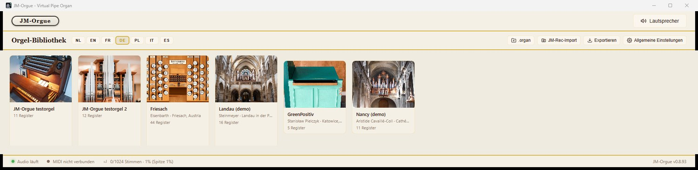
Sample-Sets finden
Unter den Karten steht der Block Weitere Samplesets mit Schaltflächen zu Herstellern, die Sets kostenlos anbieten: Piotr Grabowski, Sonus Paradisi, Lars Palo und Augustine's Virtual Organs. Jede Schaltfläche öffnet die Downloadseite des Herstellers in Ihrem Browser; JM-Orgue liest deren Hauptwerk- und GrandOrgue-Dateien direkt ein, ohne Umwandlung. Daneben steht die Schaltfläche Handbuch, die dieses Handbuch als PDF in der Sprache des Programms öffnet. Besteht eine Internetverbindung, zeigt die Bibliothek außerdem unter Zum Download verfügbar eine Karte pro Set, das das Projekt selbst anbietet: Klicken Sie darauf, wählen Sie einen Ordner, und das Set wird heruntergeladen, entpackt und der Bibliothek hinzugefügt.
Eine Orgel hinzufügen
- .organ: Wählen Sie eine Orgeldefinition (GrandOrgue
.organoder eine Hauptwerk-Definition). Sie wählen die Definitionsdatei, nicht den losen Sample-Ordner: Nur die Definition kennt Register, Koppeln, Tremulanten und eventuelle zusätzliche Aufnahmepositionen. - .orgue und .rar: Wähle ein GrandOrgue-Paket (
.orgue) oder ein RAR-Archiv (.rar), auch ein mehrteiliges Archiv: Wähle einen der Teile und lege alle Teile in denselben Ordner. JM-Orgue entpackt es einmal in seinen eigenen Ordnerpakketten, zeigt den Fortschritt im Ladebalken und lädt die Orgel; ein zweites Öffnen kostet nichts. Fehlt ein Teil, ist das Archiv passwortgeschützt oder beschädigt, folgt eine deutliche Meldung. Der entpackte Ordner belegt Speicherplatz: Du kannst den Ordnerpakkettenim Datenordner des Programms löschen, um Platz freizugeben. - JM-Rec import: importiert ein mit JM-Rec erstelltes Sample-Set.
- Exportieren: macht aus einem Ordner mit Samples eine Orgeldefinition (
.organ), die Sie danach mit der Schaltfläche .organ laden können.
Kartenschaltflächen: Foto, Suche, Entfernen
Wenn Sie auf eine Karte zeigen, erscheinen oben rechts im Foto drei Schaltflächen: Online nach einem Foto suchen (Globus), Bild selbst wählen (Kamera) und Aus Bibliothek entfernen (Kreuz). Entfernen nimmt nur die Karte aus der Bibliothek; die Dateien auf Ihrer Festplatte bleiben erhalten. Wenn Sie eine Karte 3 Sekunden gedrückt halten, sucht das Programm das Foto erneut.
Die Online-Suche zeigt einige frei verwendbare Fotos von Wikimedia Commons. Oben im Fenster stehen die Felder Kirche, Ort und Orgelbauer, vorausgefüllt aus der Orgeldefinition und den mitgelieferten Informationen; passen Sie sie an, wenn sie nicht stimmen, und wählen Sie Suchen. Darunter bleibt ein freies Suchfeld für einen eigenen Suchbegriff. Klicken Sie auf ein Foto, um es zu übernehmen; Quelle und Lizenz erscheinen unter der Karte.
Herunterladbare Sets
Sets, die du mit der Download-Schaltfläche im Programm holen kannst, erscheinen als Kachel mit gepunktetem Rand im selben Raster wie deine Orgeln. Ein Set, das du schon installiert hast, wird nicht mehr angeboten. Erscheint später eine neuere Version eines installierten Sets, steht es oben als grüne Kachel Update verfügbar; das gilt auch für ein Set, das Sie von Hand oder durch Scannen eines Ordners installiert haben (es gilt dann als älteste Version). Aktualisieren ersetzt das Set an derselben Stelle: Die neue Version wird zuerst neben der alten entpackt und erst danach ausgetauscht, sodass ein fehlgeschlagener Download das alte Set nie beschädigt. Das gerade geladene Set wird nicht aktualisiert; wählen Sie zuerst eine andere Orgel.
Hauptwerk Custom Organ (CODM) und der Importbericht
Eine Custom-Organ-Definition (.CustomOrgan_Hauptwerk_xml) beschreibt nur den Aufbau der Orgel: Manuale, Register, Koppeln und Tremulanten. Die Samples liegen in getrennten Sample-Paketen im Ordner OrganInstallationPackages, der neben oder oberhalb der Definition liegen muss. JM-Orgue prüft das vor dem Laden.
- Fehlt ein Sample-Paket, zeigt der Bildschirm Orgel ist unvollständig die fehlenden Pakete (mit Namen) und wie viele Register klingen würden. Die aktuelle Orgel bleibt aktiv, bis Sie wählen.
- Mit Paketordner wählen… zeigen Sie den Ordner, der
OrganInstallationPackagesenthält; die Wahl wird pro Orgel gemerkt. Es werden keine Dateien kopiert oder umgewandelt. - Teilweise laden lädt nur die Register, deren Samples vorhanden sind; eine Leiste oben erinnert daran und öffnet den Importbericht. Ist nichts spielbar, können Sie nur abbrechen.
- Der Importbericht nennt, was erwartet und was geladen wurde, welche Register übersprungen wurden und warum, und wo JM-Orgue eine Näherung verwendet (zum Beispiel: der Tremulant klingt als einfache Modulation, wenn die Wellenformen des Sets nicht lesbar sind).
- Samples im geschützten
.hbw-Format von Hauptwerk kann JM-Orgue nicht lesen; ein Set, das davon abhängt, wird als nicht spielbar gemeldet. - Ein Register mit nur einer Pfeife (Zimbelstern, Vogelgesang, ein einzelner Glockenschlag) kommt nicht auf das Manual, sondern als anklickbare Schaltfläche in das Werk Effektregister, genau wie bei gewöhnlichen Hauptwerk-Sets. Register mit mehreren Pfeifen bleiben auf dem Manual.
- Shortcut-Pistons aus der Definition erhalten keine eigenen Schaltflächen: Sie bedienen ein Register, eine Koppel oder einen Tremulanten, die bereits als Schaltfläche bei ihrem Werk stehen. Der Bericht nennt pro Piston, worauf er zeigt.
- Koppeln verhalten sich so, wie es der Hauptwerk-Leitfaden vorschreibt: Eine Koppel verbindet ein Manual mit den Windladen des Ziels und schaltet nicht zu einer weiteren Koppel durch. GrandOrgue-Sets schalten weiterhin durch.
- Ist die Definition in der „verkürzten“ Form geschrieben (die Felder heißen dann nur
a,b,c), meldet der Bericht, ob die Bedeutung dieser Felder sicher abgeleitet werden konnte.
Eine CODM-Orgel mit allen Samples lädt ohne Rückfrage. Gibt die Definition pro Register an, dass die höheren Obertöne stärker oder schwächer klingen sollen, wendet JM-Orgue das beim Laden an. Ob sie genau wie in Hauptwerk klingt, wurde nicht überprüft: Dafür braucht es ein vollständiges Originalset und eine Referenzaufnahme.
Der Importbericht zeigt auch, nur zur Information, was das Set selbst mitbringt: die Werte der Schwellkästen, ein eventuelles Crescendo, die aufgenommenen Tremulant-Wellenformen und das Windsystem (die Bälge mit ihrer Eigenfrequenz und ihrem Druck und welche Werke daran hängen). Der Tremulant kann diesen Wellenformen folgen und das Windmodell dem Windsystem (siehe Kapitel 7, Verhalten des Sets).
Sample-Sets mit WavPack oder FLAC
Viele GrandOrgue-Sets sind mit WavPack gepackt; die Dateien heißen dann oft einfach .wav. JM-Orgue liest sie direkt, einschließlich Schleifenpunkten und Releases, und lädt sie schnell, weil nur der Anfang jeder Aufnahme entpackt wird. Nur wenn eine Datei wirklich nicht lesbar ist (zum Beispiel eine FLAC-Datei oder eine mehrkanalige WavPack-Datei), meldet eine Leiste oben, wie viele Dateien übersprungen wurden.
3. Eine Orgel laden und spielen
Laden
Beim Laden liest JM-Orgue von jeder Pfeifenaufnahme den Anfang in den Speicher; der Rest wird während des Spielens nachgeladen. Ein großes Surround-Set kann daher einen Moment dauern; der Fortschrittsbalken zeigt, wie weit es ist. Unter der Anzeige steht eine Schaltfläche Abbrechen: Drücken Sie sie, während die Samples noch gelesen werden, kehrt das Programm zur Orgel zurück, die schon klang, ohne etwas zu ändern. Praktisch, wenn Sie versehentlich die falsche Karte angeklickt haben. Schaltet die Audio-Engine bereits um, tut die Schaltfläche nichts mehr.
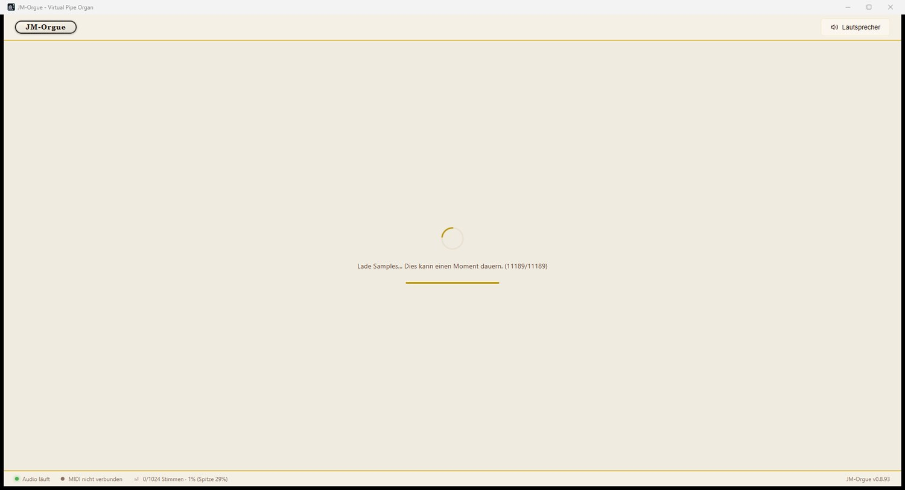
Der Motor
Nach dem Laden ist der Orgelmotor standardmäßig an, sobald das Set eine Motoraufnahme enthält, und ein leiser Wind ist sofort zu hören. Soll in Stille geübt werden, schalten Sie den Knopf Motor in der Werkzeugleiste aus; die gelbe Leiste erscheint erst, wenn wirklich kein Motor läuft. Welche Nebengeräusche standardmäßig an sind und wie laut, regeln Sie in der Werkzeugleiste mit dem kleinen Mischer neben der Nebengeräusch-Schaltfläche.
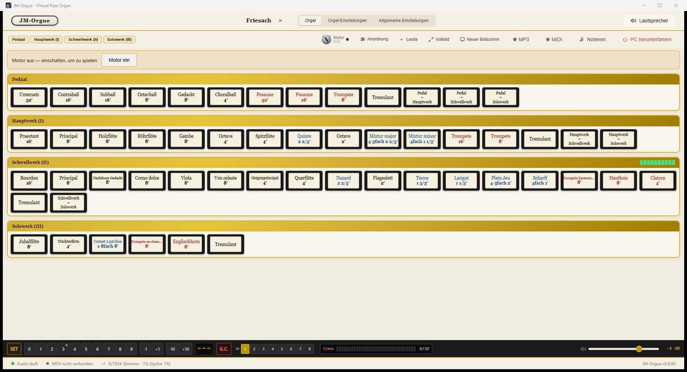
Register, Koppeln und Tremulanten
Jedes Manual hat einen eigenen Kasten mit seinen Registern. Klicken Sie auf einen Registerknopf, um das Register zu ziehen; gezogene Register werden gelb. Die Farbe des Namens zeigt die Familie: Zungenstimmen sind zum Beispiel rot, Mixturen und Quinten blau. Stimmt die automatische Einteilung bei einem einzelnen Register nicht, wählen Sie die Farbgruppe selbst unter Registerreihenfolge (Kapitel 7). In jedem Kasten stehen auch der Tremulant und die Koppeln (zum Beispiel „Hauptwerk + Schwellwerk“); die Koppeln verwenden dieselbe Schriftgröße wie die Register. Ein grüner Balken rechts in der Kopfzeile eines Manuals zeigt die Stellung des Schwellkastens. Die Werke stehen in der Reihenfolge der Manuale der Orgel (I, II, III), nicht in der Reihenfolge der Datei. Hat das Set Effektregister (Zimbelstern, Nachtigall und dergleichen), stehen diese als anklickbare Schaltflächen in einem eigenen Werk Effektregister.
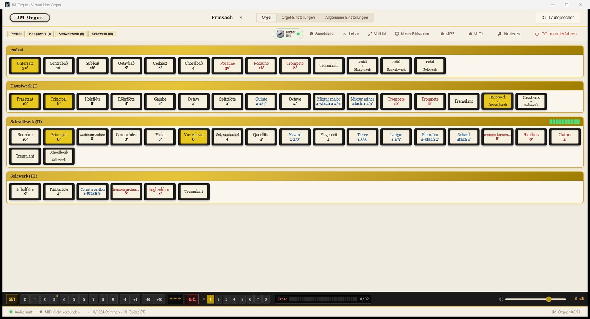
Die Setzerleiste
Unten steht die Setzerleiste mit den Bedienelementen eines Orgelspieltischs:
| Element | Funktion |
|---|---|
| SET und 0–9 | Drücken Sie SET und danach eine Ziffer, um die aktuelle Registrierung zu speichern; nur die Ziffer ruft sie ab. Ein kleiner Punkt an einer Ziffer bedeutet, dass dort eine Registrierung gespeichert ist. |
| −1 / +1, −10 / +10 | Springt zur vorherigen oder nächsten Registrierung oder zehn weiter. |
| G.C. | General Cancel: alle Register aus. |
| M 1–8 | Speicherebenen: acht getrennte Bänke mit Registrierungen. |
| Kopiertaste | Kombination kopieren nach…: Rufen Sie eine Kombination auf, drücken Sie die Kopiertaste, wählen Sie mit −10 / +10 und einer Ziffer das Ziel, und die Kombination wird dorthin kopiert, auch über eine Blockgrenze hinweg (zum Beispiel von 9 nach 10). Die gerade klingende Registrierung ändert sich nicht. |
| Cresc | Das Generalcrescendo (siehe Kapitel 7). Der Balken zeigt die aktuelle Stufe. |
| Lautstärkeregler | Gesamtlautstärke. Ein Doppelklick setzt sie auf den Standardwert zurück; mit dem Mausrad ändern Sie sie in Schritten von 1 dB. Die Gesamtlautstärke reicht bis +20 dB, für Sets, die selbst leise aufgenommen sind; sie wird pro Orgel gespeichert, und der Begrenzer am Ausgang verhindert Verzerrung. |
Jede Schaltfläche der Setzerleiste kann mit einer Taste Ihres eigenen Spieltischs verbunden werden: Rechtsklick (oder 3 Sekunden gedrückt halten) und danach die Taste am Spieltisch drücken.
MIDI-Kanal pro Manual lernen
Sie müssen nicht erst in die Orgel-Einstellungen: rechtsklicken Sie auf den Namen eines Werks über den Registern — oder berühren Sie ihn 2 Sekunden lang auf einem Touchscreen — und das Programm fragt nach der tiefsten und höchsten Taste dieses Manuals. So wird der Kanal eingestellt, ohne den Spieltisch zu verlassen.
Spieltisch-Designer: den eigenen Spieltisch gestalten
Laden Sie eine Orgel und öffnen Sie den Spieltisch-Designer oder drücken Sie im Hauptfenster F4. Sie gestalten die Bedienelemente dieser Orgel: Register, Koppeln und eigene Texte. Die verfügbaren Elemente stammen aus der geladenen Orgel. Das Design ändert Anordnung und Aussehen; Klangeinstellungen und MIDI-Zuordnungen bleiben denselben Registern und Koppeln zugeordnet.
- Wählen Sie eine Ausführung: Warmes Nussbaum, Helles Elfenbein oder Dunkles Studio. Unter Bedienelement wählen Sie aus acht Formen: Registerwippe, Porzellan-Registerwippe, Holz-Registerwippe, Zugregister, Elfenbein-Zugregister, Piston mit Messingrand, Gebogene Theaterwippe oder Flache Taste. Sie können die Form pro Element wählen oder für alle Elemente gleichzeitig verwenden.
- Fügen Sie links ein Register, eine Koppel oder einen Text hinzu. Wählen Sie das Element auf der Entwurfsfläche aus und ziehen Sie es an die gewünschte Stelle. Mit den Größengriffen ändern Sie die Abmessungen direkt auf der Fläche. Rechts stellen Sie eigenen Text, Position und Abmessungen auch mit Zahlen ein. Die Pfeiltasten verschieben das ausgewählte Element im Raster.
- Legen Sie bei Bedarf zusätzliche Seiten an und geben Sie ihnen einen erkennbaren Namen. Mit Vorschau sehen Sie das Ergebnis; ein Klick auf ein Register in dieser Vorschau bedient die Orgel nicht.
- Schalten Sie Eigene Konsole verwenden ein und wählen Sie Anwenden. Das Design wird für diese Orgel gespeichert und erscheint auf dem Reiter Orgel. Dort bedienen die Knöpfe die echten Register und Koppeln.
Magnetisches Ausrichten hilft, Elemente auf eine Linie zu bringen. Beim Ziehen erscheinen Hilfslinien an passenden Kanten und Mittelpunkten. Halten Sie Alt gedrückt, um ohne Ausrichtung frei zu verschieben. Mit Breite Arbeitsfläche schaffen Sie mehr Platz für den Entwurf; Seitenleisten anzeigen holt Elementliste und Eigenschaften zurück.
Mit Textur wählen Sie unabhängig von der Ausführung feine Holzmaserung, Eiche, Wurzelnussbaum, Äbenholz, Leinen, gebürstetes Metall oder einfarbig. Texturstärke bestimmt, wie deutlich das Muster zu sehen ist, Texturgröße, wie groß es dargestellt wird. Über Eigene Textur wählen… verwenden Sie ein eigenes PNG-, JPG- oder WebP-Bild mit höchstens 2 MB und 8192 × 8192 Pixeln. Das Bild wird in den Entwurf aufgenommen und reist mit den Orgeleinstellungen; die Originaldatei muss also nicht am selben Ort bleiben.
Rückgängig stellt die vorherige Bearbeitung wieder her. Mit Änderungen verwerfen gehen Sie zum zuletzt angewendeten Entwurf zurück. Verlassen Sie den Designer mit nicht gespeicherten Änderungen, fragt die App, ob Sie sie verwerfen oder weiterbearbeiten möchten. Um wieder die Standardkonsole zu verwenden, schalten Sie Eigene Konsole verwenden aus und wählen Anwenden.
Jede Orgeldefinitionsdatei erhält ihren eigenen Entwurf, auch wenn zwei Definitionen im selben Ordner liegen. Zuerst wird die lokale Bibliothek sicher gespeichert, danach die Einstellungsdatei neben der Definition. Ist der Set-Ordner nicht beschreibbar, bleibt der Entwurf lokal gespeichert und die App meldet, dass die Kopie neben der Definition nicht aktualisiert werden konnte.
Sind nach einem Sample-Set-Update Register oder Koppeln verschwunden, meldet der Spieltisch-Designer die fehlenden Verweise. Entfernen oder ersetzen Sie diese Elemente, bevor Sie die eigene Konsole wieder aktivieren. Den Entwurf können Sie mit ausgeschaltetem Eigene Konsole verwenden trotzdem speichern, um ihn später wiederherzustellen. Ein unlesbarer Entwurf wird nie automatisch überschrieben; die normale Konsole bleibt verfügbar.
Die eingebauten Texturen sind echte, kachelbare Strukturen (Holz, Leinen und gebürstetes Metall), die über der Themenfarbe liegen: Dieselbe Textur wirkt auf Nussbaum warm, auf Elfenbein hell und im dunklen Studio kühl. Unten einige Beispiele für Bedienformen und Ausführungen, jeweils mit einer Form für alle Elemente.
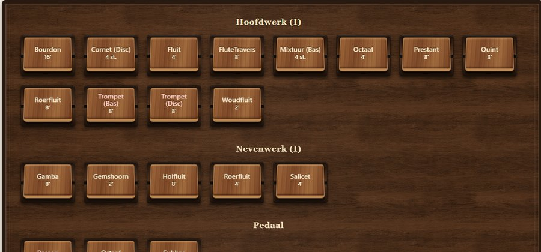
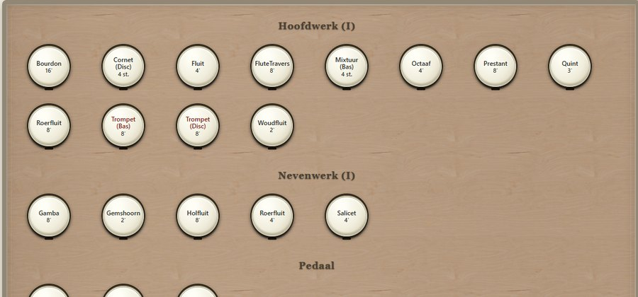
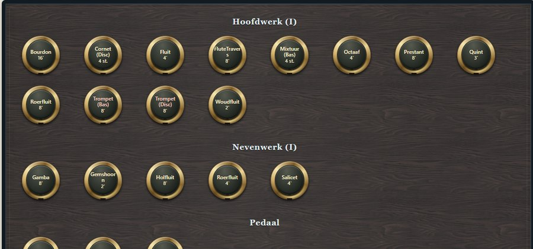
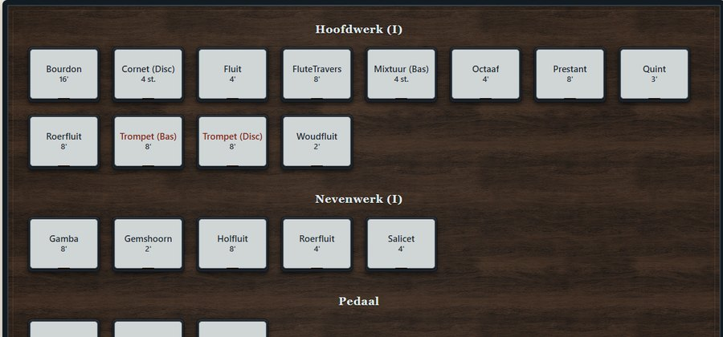
Neben den drei Ausführungen gibt es vier einfarbige Orgelfarben: Weinrot, Cremeweiß, Orgelgrün und Graublau; kombinieren Sie sie mit der Textur Einfarbig für ein gestrichenes Gehäuse. Sechs Bedienformen sind hinzugekommen: Ebenholz-Zugregister, Palisander-Zugregister, Ovale Porzellanplatte, Registertaste (Zunge), Leuchtdrucktaster und Quadratischer Holzzug. Mit Diese Größe für alle Elemente verwenden übernehmen Sie Breite und Höhe des ausgewählten Elements für alle Register und Koppeln; runde Formen bleiben rund. Elemente neben- oder untereinander werden als Reihe oder Spalte erkannt: Ein Element, das Sie daneben ziehen, rastet im gleichen Abstand ein, und Reihe ausrichten oder Spalte ausrichten setzt die Reihe oder Spalte auf eine Linie mit gleichen Abständen. Die Seiten eines Entwurfs heißen jetzt Bildschirme: Jedes zusätzliche Fenster (Neuer Bildschirm) zeigt standardmäßig seinen eigenen Bildschirm, das zweite Fenster also den zweiten.
Orgelbauer: Register aus mehreren Sample-Sets kombinieren
Öffnen Sie den Orgelbauer oder drücken Sie F5, auch ohne geladene Orgel. Sie können ein bis 64 Quelldefinitionen verwenden. Beginnen Sie auf der ersten Quellkarte mit Definition wählen… und nutzen Sie dann Quelle hinzufügen… oder die nächste leere Karte. Wählen Sie die Register aus, die Sie verwenden möchten. Jedes Register bleibt vollständig mit seinen Pfeifen, Klangschichten, Release-Samples und unterstützten Tremulantenaufnahmen. Verteilen Sie die Auswahl auf eigene Manuale und Pedal und stellen Sie MIDI-Kanäle und Tastenbereiche ein.
Jede Quellkarte hat einen eigenen Paketordner…, eine Stimmung und gegebenenfalls eine Aufnahmeposition. Quellbuchstaben laufen nach Z mit AA, AB usw. weiter. Bis zu vier Quellen wählen Sie die Quellorgel für die Registerliste mit Schaltflächen; ab fünf Quellen verwenden Sie die Auswahlliste Quellorgel.
Für jede Quelle wählen Sie Original beibehalten oder Konzertstimmung angleichen. Beim Angleichen geben Sie die tatsächlich aufgenommene A-Referenz ein, zum Beispiel 415 Hz; die Quelle wird dann auf die gemeinsame Projektreferenz verschoben. Diese Referenz wird nicht automatisch gemessen. Die interne Temperierung und bewusste Celeste-Schwebung bleiben erhalten. Mit einer zusätzlichen Cent-Korrektur stimmen Sie die Quelle fein ab. Die globale Temperierungswahl wird bei Projekten durch diese Quelleinstellungen ersetzt.
Eine neue Quelle steht auf Automatisch gelijkstemmen (automatisch angleichen): Jede Pfeife wird von ihrer gemessenen Tonhöhe auf die gemeinsame Konzertstimmung gestimmt, sodass Sets untereinander rein klingen; bewusst schwebende Stimmen behalten ihre Schwebung. Wählen Sie eine der beiden anderen Möglichkeiten nur, wenn Sie die Originalstimmung hören möchten oder das aufgenommene A genau kennen. Register aus verschiedenen Sets dürfen auf demselben Werk stehen, auch wenn sie aus einem anderen Schwellkasten oder von einem anderen Tremulanten stammen: Das Werk hat einen Schwellkasten und einen Tremulanten, und diese gelten für alle seine Register.
Speichern und laden sichert ein .jmorgan-Projekt und lädt die zusammengestellte Orgel. Danach öffnet Konsole einrichten den visuellen Spieltisch-Designer. Register-IDs bleiben beim Umordnen und Verschieben auf ein anderes Manual erhalten. Das Projekt verweist auf die Originaldefinitionen und -samples; diese werden weder geändert noch mitkopiert. Nehmen Sie beim Umzug auch die eigene Datei .jm-settings-project-…json mit Konsole, MIDI, Kombinationen und Intonation mit.
Das Projektformat bleibt Version 1: Bestehende Projekte mit zwei Quellen öffnen sich ohne Umwandlung und behalten ihre UUID und Registerziele. Die gemeinsamen Projektgrenzen bleiben 2.048 Register, 512 eigene Koppeln, 64 Konsolenseiten, 16 genutzte Rank-Schwellkästen, 256 aktive Windkammern und 4.096 Windregler. Diese Zahlen gelten für alle Quellen zusammen. Bei vielen Konsolenseiten wählen Sie die Seite über eine Auswahlliste. Aufgenommener Hall bleibt hörbar; trockene bzw. direkte Aufnahmen passen meist am besten zusammen. Geänderte oder fehlende Quellen blockieren das Laden, bis Sie sie erneut prüfen.
Rank-Schwellkästen von JM-ACOUSTICS bleiben erhalten. Kästen aus verschiedenen Quellen arbeiten unabhängig, auch auf demselben Zielmanual. Es können höchstens 16 tatsächlich genutzte Rankkästen aktiv sein. Lernen Sie die Schwelltritte in den Orgeleinstellungen ein; beim Neuladen wird jede Zuordnung wieder mit demselben Quellkasten verbunden.
Getrennte Quellwindnetze behalten ihre eigenen Kammern, Balgs, Verbindungen und ihren Pfeifenverbrauch. Das JM-Orgue-Modell berechnet ihren Druck getrennt pro Quellpfeife. Verwenden Sie Windwerk des Sets und laden Sie das Projekt neu, um diese Quellmodelle ein- oder auszuschalten; die gewöhnlichen Windgruppen steuern Register ohne Quellnetz. Insgesamt gibt es höchstens 256 aktive Quellkammern, 4.096 Verbindungen und 4.096 Windregler.
Quellwindventile im Orgelbauer zeigen die unterstützten Schalter und stufenlosen Regler des geladenen Projekts. Ihre Anfangsstellungen und eine eventuell umgekehrte Schaltwirkung stammen aus der Quelldefinition. Registerventile folgen ihren verknüpften Projektregistern: Ist mindestens ein verknüpftes Register an, ist der Quellschalter eingeschaltet. Eigenständige Ventile bedienen Sie mit Schalter oder Schieber; Anfangsstellung stellt den Quellwert wieder her. Jede Änderung wird bei diesem Projekt gespeichert, bevor sich der Audiozustand ändert. Schlägt die lokale Speicherung fehl, bleibt der vorherige Zustand bestehen; kann nur die Kopie neben dem Projekt nicht aktualisiert werden, erscheint eine Meldung. Nehmen Sie beim Umzug die eigene Einstellungsdatei mit.
Automatische Quellregelungen folgen ihrer vollständigen Steuerkette: Balgerweiterung, Druck und Durchfluss können die Ventile zurückregeln. Direkte Übertragungen, Willis-Verzögerungen, Trägheit, Bedingungen und Schwellenschalter werden berücksichtigt. Der Balg bewegt sich zwischen seinen physischen Grenzen und reagiert auf Druck und Verbrauch. Automatische Bedienelemente und ausdrücklich verborgene Quellkonstanten sind nur lesbar; bei handbedienten Eingängen bleiben Schalter und Schieber verfügbar. Quellidentitäten halten gleiche IDs aus verschiedenen Sample-Sets getrennt.
Dies bleibt das JM-Modell, ohne Anspruch auf identisches Hauptwerk-Verhalten. Kontinuierliche Übertragungen verwenden Werte 0..127: zuerst eine eventuelle Invertierung, dann Offset und Faktor, eine Potenzfunktion und Begrenzung. Willis wird mit einer exponentiellen Zeitkonstante angenähert, Trägheit mit einer gedämpften Feder. Handbediente Ventile verwenden einen Übergang von 10 ms. Unter 60 % des nominalen Quellniederdrucks verklingt der Klang allmählich. Fehlende Reglerdaten, unbekannte Logik, rein direkte kontinuierliche Schleifen, doppelte kontinuierliche Übertragungen, Balgfedern und erzwungene Balgstellungen blockieren das Laden, bevor die aktive Orgel ersetzt wird. Die Quellwarnungen nennen den Grund.
Ein ausgewähltes Register, dessen Quellschalter auch von automatischer Quelllogik bedient wird, kann noch nicht mit der Projektregistrierung verknüpft werden. Das Projekt wird in diesem Fall vor dem Laden abgelehnt; die Registrierung ändert sich dadurch nicht stillschweigend.
Eine gesonderte Steuerung der aufgenommenen Tremulant-Wellenform bleibt außerhalb dieser Version. Gewöhnliche GO-Windladen-Schwellkästen und verschiedene Tremulantgruppen verlangen noch getrennte Zielmanuale; unabhängige JM-ACOUSTICS-Rankkästen haben diese Einschränkung nicht.
4. Die Werkzeugleiste
Über den Registern steht die Werkzeugleiste. Links stehen die Manuale (Pedal, Hauptwerk, …) als Schaltflächen: Damit blenden Sie ein Manual ein oder aus. Rechts stehen die folgenden Funktionen.
| Schaltfläche | Funktion |
|---|---|
| Motor | Orgelmotor ein oder aus. |
| Anordnung | Öffnet das Anordnungsmenü (siehe unten). |
| Leiste | Zeigt oder verbirgt die Hauptleiste mit den Reitern und der Profilschaltfläche. |
| Vollbild | Spieltischmodus: nur die Register und die Setzerleiste (F11). |
| Neuer Bildschirm | Öffnet ein zusätzliches Fenster mit denselben Registern, zum Beispiel für einen zweiten Monitor oder eine zweite Tastatur. |
| MP3 | Nimmt auf, was Sie hören. Die Aufnahme landet in Dokumente\JM-Orgue-opnames. Klicken Sie auf den roten Zähler, um zu stoppen; danach meldet das Programm, wo die Datei liegt. Danach fragt das Programm, ob Sie zum Ordner mit der Aufnahme gehen möchten. |
| MIDI | Nimmt auf, was Sie spielen (nur Noten), als .mid-Datei. Klicken Sie auf den blauen Zähler, um zu stoppen, und wählen Sie den Speicherort. Der Pfeil neben der Schaltfläche öffnet ein Menü: MIDI-Datei öffnen… wählt eine .mid-Datei und hält sie bereit, Aufnahme starten macht dasselbe wie die Schaltfläche selbst. Ist eine Datei geöffnet (oder gerade aufgenommen), erscheint die Schaltfläche Abspielen; sie wird zu Stopp, solange die Datei spielt. Ziehen Sie die Register selbst: Eine MIDI-Datei enthält nur Noten. Weitere Optionen (Pause, Position, Tempo) finden Sie unter Routing im Block MIDI abspielen. Neben der Wiedergabetaste steht eine Positionsleiste mit der Spielzeit: Ziehen Sie sie, um vor- oder zurückzuspulen; der Spieler schaltet dabei zuerst alles stumm, damit keine Töne hängen bleiben. Nach einer Aufnahme fragt das Programm auch, ob Sie zum Ordner mit der Datei gehen möchten. Das Häkchen Kanäle selbst zuweisen im MIDI-Menü ist für MIDI-Dateien anderer gedacht, die oft eine andere Kanalaufteilung haben als Ihre Orgel: Wählen Sie für jeden Kanal der Datei ein Manual (oder nicht erklingen lassen) und gegebenenfalls eine Oktavverschiebung von −2 bis +2. Das gilt nur während der Wiedergabe und lässt Ihre eigene Zuordnung und Ihr Live-Spiel unberührt; ist es aus, spielt die Datei nach Ihrer Zuordnung. |
| Notieren | Öffnet das Notationsfenster: Noten erscheinen, während Sie spielen, in Notenschrift oder Klavar, mit Notenzeilen, Overdub und Bearbeitung, und lassen sich direkt als PDF drucken (siehe unten). |
| PC herunterfahren | Beendet die Software und den Computer, nach einer Bestätigung; der letzte Zustand wird vorher gespeichert. Rechtsklick oder 3 Sekunden gedrückt halten verbindet die Schaltfläche mit einer Taste Ihres Spieltischs. |
Das Anordnungsmenü
Mit Anordnung passen Sie die Darstellung an Ihren Bildschirm an: Einpassen misst die Knöpfgröße so, dass alle Register ins Bild passen, die Minus/Plus-Schaltflächen ändern Breite und Höhe der Knöpfe, und außerdem wählen Sie Manuale untereinander oder nebeneinander (vertikal), runde statt rechteckiger Knöpfe und die Position der Koppeln (im Manual oder in einer eigenen Leiste). Die Auswahl wird pro Orgel gemerkt.
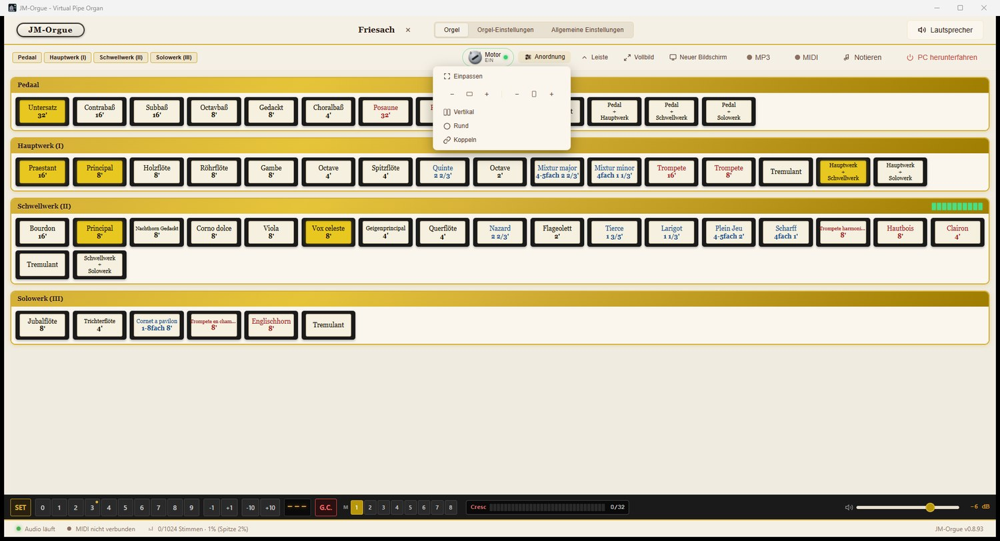
Vollbild (Spieltischmodus)
In diesem Modus verschwinden die Titelleiste, die Windows-Taskleiste und die Hauptleiste: Sie sehen nur die Register und die Setzerleiste. Oben steht ein schmaler Streifen mit vier Schaltflächen: Leisten (die Hauptleiste vorübergehend zurückholen), Motor ein (ein oder aus), Vollbild beenden und PC herunterfahren (Software und Computer beenden). F11 schaltet den Modus ein und aus; Esc schaltet ihn aus.
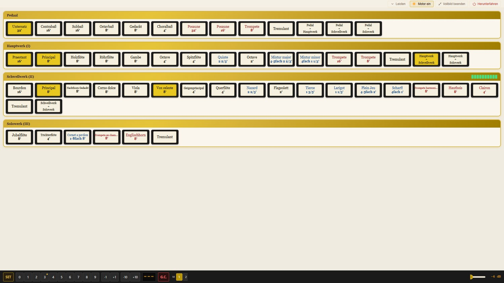
Ein zweiter Bildschirm
Neuer Bildschirm öffnet ein eigenes Fenster, das Sie auf einen anderen Monitor ziehen oder klein neben dem Hauptfenster stehen lassen können. Es hat eigene Anordnungseinstellungen: Sind die Knöpfe zu klein, wählen Sie Anordnung und stellen Sie Knopfbreite und Knopfhöhe ein, oder wählen Sie Manuale untereinander oder nebeneinander.
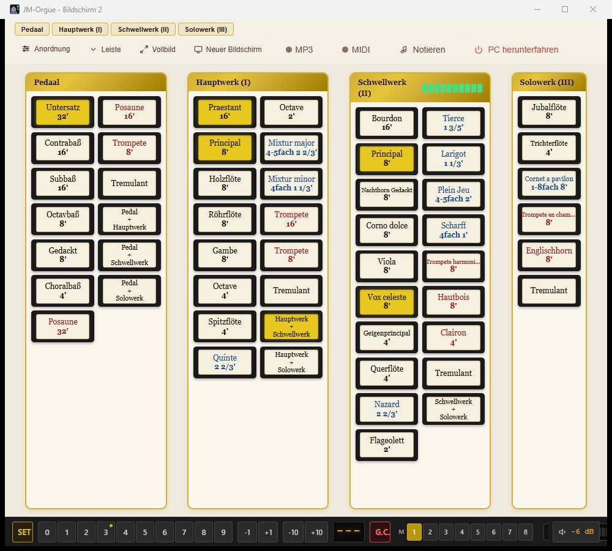
Das Notationsfenster: Noten, Klavar und PDF
Mit Notieren öffnet sich ein eigenes Fenster, in dem Ihr Spiel aufgeschrieben wird; ein zweites Programm zum Komponieren oder Ausarbeiten eines Stücks ist nicht nötig. Wählen Sie Neu… für ein neues Stück (Titel, Komponist, Taktart, Tonart, Tempo, Anzahl der Takte und Notenzeilen) und drücken Sie Aufnahme: Die Aufnahme beginnt bei der ersten Note, die Sie spielen. Ein Stück hat mehrere Notenzeilen, zum Beispiel rechts, links und Pedal; jede Zeile hat unter Notenzeilen & Stimmen einen eigenen Kanal mit einer Schaltfläche Lernen (spielen Sie eine Taste auf dem Manual, das auf diese Zeile kommen soll). Spielen Sie rechts, links und Pedal auf drei MIDI-Kanälen, landen sie so gleichzeitig auf drei Zeilen. Ein neuer Take (Overdub) kommt zu dem hinzu, was schon steht.
- Ansicht: Notenschrift zeigt gewöhnliche Notenzeilen; Klavar zeigt Klavarskribo, in dem die Linien die schwarzen Tasten sind und die Zeit von oben nach unten läuft. Pro Zeile wählen Sie die Hand (rechts, links, Pedal oder R+L mit Teilungspunkt) und mit Umfang, ob die Zeilen um die gespielten Noten oder über das ganze Manual laufen.
- Drucken / PDF druckt die Partitur oder speichert sie als PDF, in der gewählten Ansicht. Unter Exportieren stehen außerdem Als MIDI speichern…, Als MusicXML speichern (für andere Notationsprogramme) und für Klavar Als SVG speichern….
- Speichern sichert das Stück als JM-Orgue-Partitur (
.jmscore), Öffnen… holt es zurück; eine vorhandene MIDI-Datei lässt sich als zusätzlicher Take importieren. Auf den Reitern Eingabe, Texte & Zeichen und Wiedergabe geben Sie Noten Schritt für Schritt ein, setzen Texte und Zeichen und spielen das Stück über die Orgel ab.
Tastenkürzel im Notationsfenster: Strg+N neues Stück, Strg+O öffnen, Strg+S speichern, Strg+C kopieren.
5. Mehrere Hörpositionen
Manche Sample-Sets wurden an mehreren Stellen in der Kirche aufgenommen, zum Beispiel nah, vorn, in der Mitte und hinten. Ein solches Set zeigt in der Werkzeugleiste die Schaltflächen Perspektive, eine pro Position. Klicken Sie auf eine Position, um sie ein- oder auszuschalten; es können mehrere gleichzeitig klingen. Rechts davon steht die Hörposition: Der Regler zwischen „nah“ und „hinten“ blendet stufenlos zwischen den aufgenommenen Positionen über.
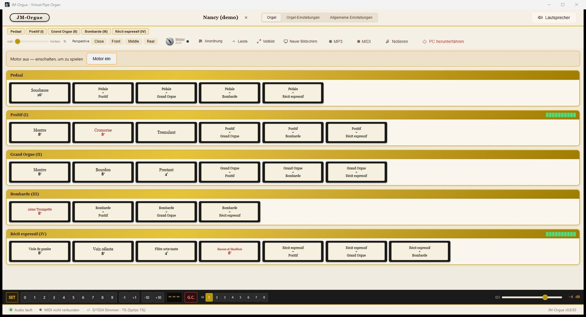
6. Der Assistent für eine neue Orgel
Wenn Sie eine Orgel zum ersten Mal laden, startet automatisch der Assistent „Orgel einrichten“. In sechs Schritten geht er alles durch, was Sie mit Ihrem eigenen Spieltisch verbinden müssen. Alles lässt sich später ändern, und Sie können den Assistenten erneut starten über Orgel-Einstellungen → Routing → Assistent. Später schließt den Assistenten und fragt beim nächsten Öffnen erneut; Überspringen (Schritt 1) überspringt ihn ganz.
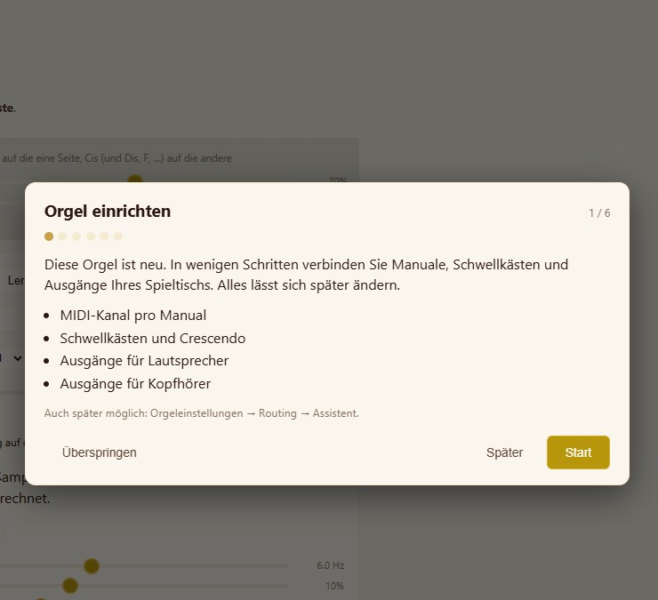
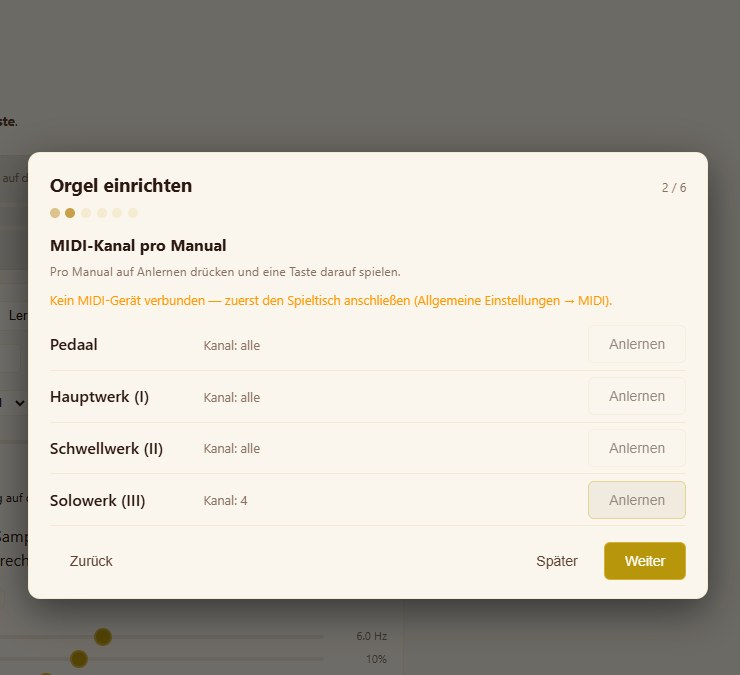
- Start: eine Übersicht der Schritte.
- MIDI-Kanal pro Manual: Wählen Sie bei jedem Manual Anlernen und spielen Sie eine Taste auf diesem Manual. Das Programm merkt sich den Kanal. Die Schaltflächen funktionieren nur, wenn ein MIDI-Gerät verbunden ist (Allgemeine Einstellungen → MIDI); sonst erscheint eine Warnung.
- Schwellkästen und Crescendo: Wählen Sie Anlernen und bewegen Sie das Pedal ganz zu und ganz auf. Dasselbe gilt für das Generalcrescendo. Hat ein Set Schwellkästen je Rank (Kapitel 9), erscheinen sie hier ebenfalls.
- Ausgänge für Lautsprecher: Wählen Sie Treiber und Gerät, speichern Sie sie als Profil „Lautsprecher“ und wählen Sie pro Manual, auf welchen Ausgängen Ihres Audio-Interfaces es klingt. Darunter stehen dieselben Auswahlmöglichkeiten für das Motorgeräusch, die Raum- und Mechanikgeräusche, die Effektregister und das Tremulantgeräusch, soweit das Set sie hat.
- Ausgänge für Kopfhörer: dasselbe für das zweite Profil, zum Beispiel einen Kopfhörerausgang. Ab dann wechseln Sie mit der Schaltfläche Lautsprecher oben rechts zwischen den beiden Profilen.
- Fertig: Die Einstellungen sind bei dieser Orgel gespeichert.
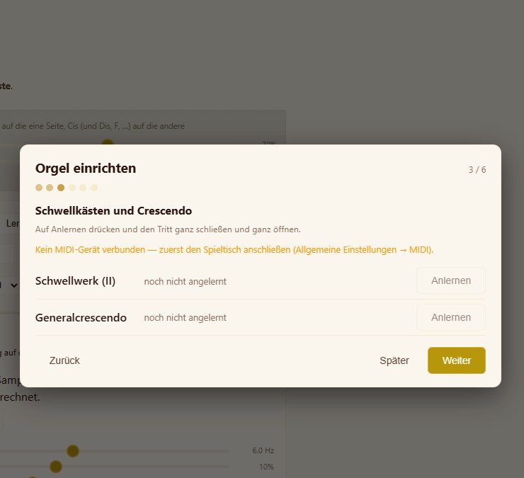
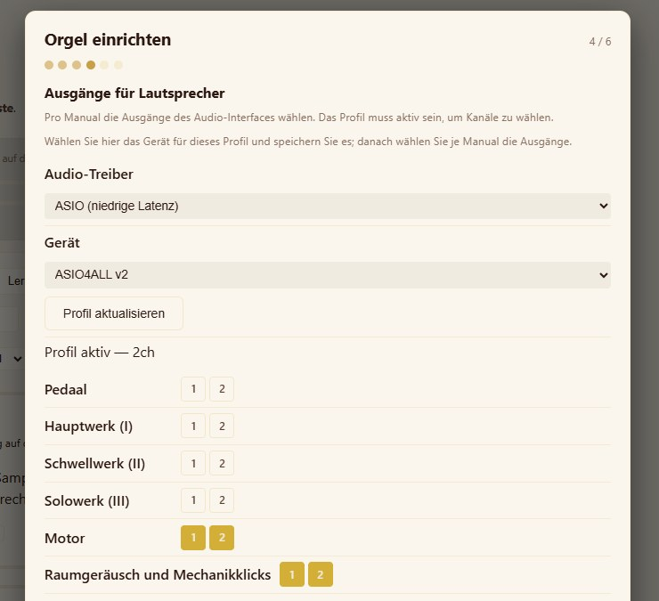
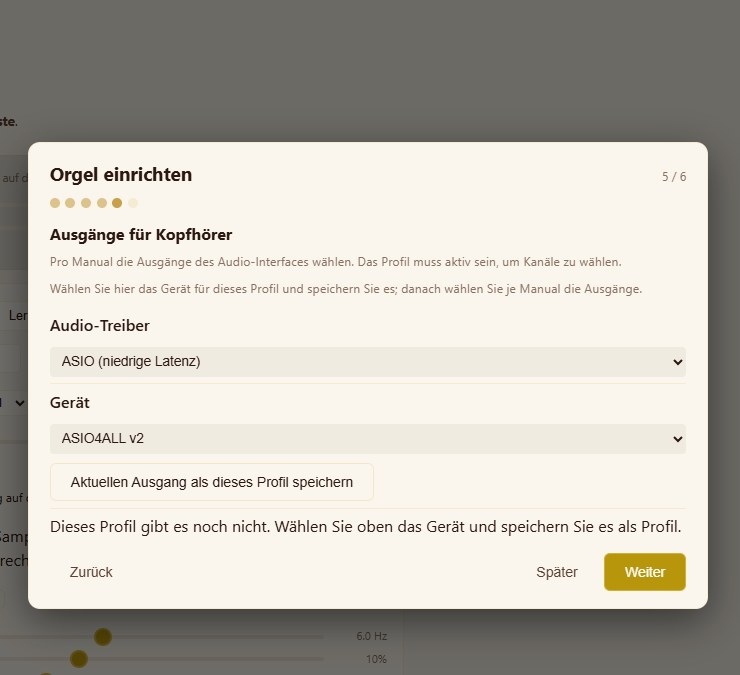
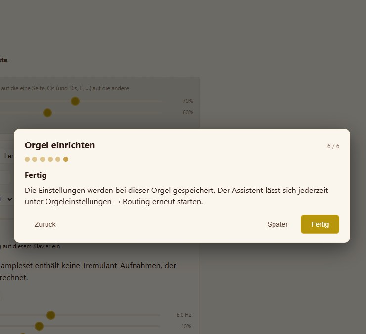
7. Orgel-Einstellungen
Einstellungen, die zur geladenen Orgel gehören, werden pro Orgel gespeichert. Oben stehen die Reiter Klang, Laden, Crescendo, Registerreihenfolge, Routing und Alle; der letzte legt alle Blöcke untereinander. Unter Laden wählst du Aufnahmepositionen und Register, die in den Speicher kommen.
Jede Orgeldefinition erhält eine eigene Einstellungsdatei, auch wenn mehrere Definitionen im selben Ordner liegen. Findet das Programm eine ältere Datei .jm-settings.json, deren Besitzer unbekannt ist, fragt es, ob sie zur gewählten Orgel gehört. Die alte Datei bleibt erhalten. Bist du unsicher, wähle Abbrechen; diese Wahl wird für diese Orgel auf diesem PC gespeichert, auch nach einem Neustart. Unter Registerreihenfolge → Einstellungen exportieren/importieren kannst du später Alte Orgeleinstellungen übernehmen… wählen. Bestehende Einstellungen werden nur nach zusätzlicher Bestätigung ersetzt; davon legt das Programm zuvor eine Sicherung an.
Klang
Der erste Block enthält die Haupteinstellungen:
- Lautstärke: die Gesamtlautstärke dieser Orgel.
- Stimmung: „Original“ spielt die Pfeifen, wie sie aufgenommen wurden. Andere Stimmungen (gleichschwebend und historische Temperaturen) stimmen die Pfeifen anhand der gemessenen Tonhöhe jeder Aufnahme nach. Unter der Auswahl sehen Sie, wie viele Pfeifen eine gemessene Tonhöhe haben. Was die Orgeldefinition vorgibt, hat dabei Vorrang: Ein schwebendes Register mit angegebener Abweichung (Unda maris, Voix céleste) klingt auf der Temperatur plus dieser Abweichung, eine Aufnahme, deren Tonhöhe in der Definition steht, wird darauf nachgestimmt, und ein Set, das angibt, nicht auf der originalen Orgeltonhöhe zu spielen, spielt immer auf der Zieltonhöhe. Mit Eigene Stimmung… stellen Sie die Abweichung pro Ton selbst in Cent ein. Mit Scala-Datei laden… lesen Sie eine .scl-Datei (das weltweite Format für mikrotonale und historische Stimmungen der Huygens-Fokker-Stiftung); die eingelesene Stimmung erscheint in der Liste und wird für spätere Sitzungen gespeichert.
- Feinstimmung: alles zusammen höher oder tiefer, in Cent.
Hall regelt den Nachhall. Hat das Set die Kirchenakustik schon in den Aufnahmen, steht das dort (mit einer Schaltfläche Zurück zur Aufnahme (Nachhall aus), um den zusätzlichen Nachhall auszuschalten): Zusätzlicher Hall ist dann Geschmackssache. Sie wählen zwischen Algorithmisch (ein berechneter Hall mit RT60, Vorverzögerung, Dämpfung und Raumgröße, auch als Preset) und Impulsantwort mit einer eigenen Impulsantwort (IR). Mit Mix bestimmen Sie, wie viel Hall Sie hören.
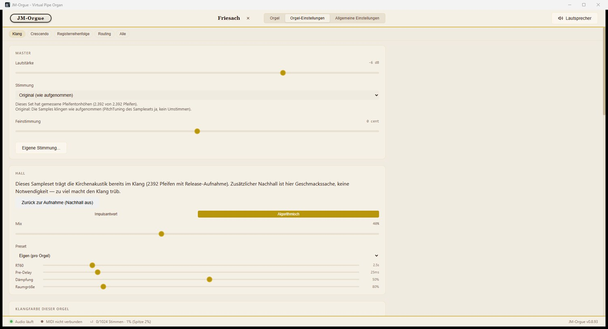
Klangfarbe dieser Orgel ist eine eigene Klangregelung pro Orgel; die Korrektur für Ihre Kopfhörer oder Lautsprecher ist getrennt, in den allgemeinen Einstellungen. Das Windmodell lässt die Orgel atmen: Ein Akkord mit vielen Registern senkt den Winddruck, wie bei einer echten Orgel, und Flöten und Zungenstimmen reagieren darauf unterschiedlich. Sie wählen die Anzahl der Windgruppen (welche Manuale sich denselben Balg teilen) und pro Gruppe die Balggröße, die Dämpfung, den maximalen Druckabfall und den Charakter des Windes.
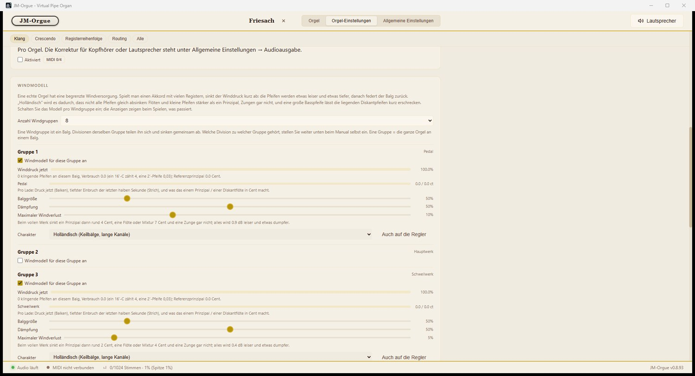
Nebengeräusche zeigt die durchlaufenden Geräusche des Sets, etwa Motor und Raumrauschen. Sie stellen die Lautstärke ein, schalten den Motor ein oder aus und können die Tastatur-Mechanik (klickende Tasten) aktivieren. Die Tastenmechanik ist standardmäßig aus, weil sie viel Speicher braucht und ein erneutes Laden der Orgel verlangt.
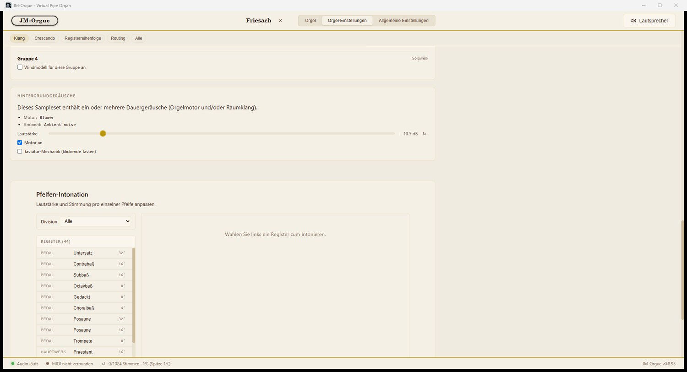
Unten steht die Pfeifen-Intonation: Wählen Sie links ein Register und passen Sie Lautstärke und Stimmung jeder einzelnen Pfeife an. Wollen Sie das ganze Register auf einmal verschieben? Stellen Sie dann die Schieberegler auf den gewünschten Wert und drücken Sie Auf alle Pfeifen anwenden — jede Pfeife des Registers erhält dann dieselbe Lautstärke- und Stimmungsanpassung.
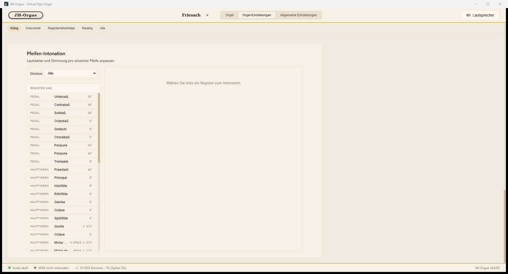
Verhalten des Sets und Register nicht laden
Unter Klang steht der Block Verhalten des Sets (dieses Instrument) mit Kontrollkästchen, die bestimmen, ob JM-Orgue den Daten des Sets selbst folgt: Pegel des Sets übernehmen, Überblendung des Set-Erstellers beim Loslassen, Koppeln folgen dem Set, Koppeln des Sets vollständig einlesen, Windsystem des Sets, Tremulant folgt der Wellenform des Sets und Stille Ausklänge abschneiden (mit einer Schwelle in dB). Sie gelten pro Orgel: Eine Orgel, die du schon benutzt hast, bleibt wie sie war, eine neu installierte Orgel folgt dem Set. Schwellkasten-Werte des Sets verwenden ist standardmäßig immer aus; an bedeutet, dass der Schwellkasten mit der Dämpfung und dem Filter beginnt, die das Set selbst angibt, für Werke, bei denen du selbst nichts eingestellt hast. Nach dem Ändern eines Kontrollkästchens lädst du die Orgel neu.
Koppeln des Sets vollständig einlesen liest bei einem Hauptwerk-Set auch die Koppeln, die auf ein anderes Manual zeigen (mit Oktavkoppeln und Koppeln innerhalb eines Manuals), statt sie zu erraten. Mit Windsystem des Sets folgt das Windmodell dem Windsystem, das ein Hauptwerk-Set beschreibt: Jeder Balg des Sets wird zu einer eigenen Windgruppe, der Luftverbrauch pro Pfeife stammt aus dem Set, und die Mittelstellung von Balggröße und maximalem Absinken ist der Wert dieses Balgs. So sinkt bei einem vollen Werk zum Beispiel der Pedalbalg gesondert ein. Die Regler des Windmodells bleiben wirksam und skalieren diese Werte; das Windmodell selbst muss eingeschaltet sein. Mit Tremulant folgt der Wellenform des Sets erhält der Tremulant eines Werks die aufgenommene Wellenform eines Hauptwerk-Sets als Form (einen gemessenen Zyklus von Tonhöhe und Stärke) und die Geschwindigkeit des Sets, und jede Pfeife die Tiefe, die das Set für sie angibt. Geschwindigkeit und Tiefe der Tremulant-Regler gelten dann nicht; Register mit echten Tremulant-Aufnahmen ändern sich nicht.
Auf dem Reiter Laden lässt der Block Register nicht laden Register, die du nicht benutzt, beim Laden weg, pro Orgel: Das spart Speicher und Ladezeit. Öffne die Liste, entferne das Häkchen bei den Registern, die du nicht brauchst (bei jedem Register steht der Speicher, den es vorab braucht), und wähle Anwenden und neu laden. Alles laden setzt alle Häkchen zurück. Die Auswahl wird bei der Orgel gespeichert; eine Orgel ohne Auswahl lädt alles.
Crescendo
Das Generalcrescendo zieht beim Bewegen eines Crescendotritts Schritt für Schritt mehr Register. Sie bestimmen selbst, welche Register in welche Stufe kommen:
- Aktiviert schaltet das Crescendo ein; Stufen ist die Anzahl der Stufen.
- Auto-Füllen trägt einen Vorschlag ein, der zu den Registern dieser Orgel passt. Mit den Optionen darunter bestimmen Sie, ob Koppeln mitmachen, ob Farbregister (Sesquialtera, Cornet, Terz), 32′-Zungen und Chamaden mitmachen und ob die Oktavkoppeln erst im Tutti kommen. Löschen leert die Matrix.
- In der Matrix schaltet ein Klick auf ein Feld das Register in dieser Stufe ein oder aus; Umschalt+Klick setzt es für alle Stufen ab dieser Stufe.
- Pedal lernen verbindet Ihren Crescendotritt; unten können Sie Kanal und CC-Nummer auch von Hand eintragen.
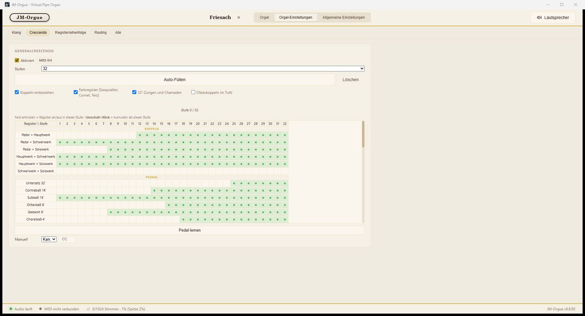
Bringt das Set selbst ein Crescendo mit, steht neben Auto-Füllen die Schaltfläche Vom Set: die Stufen des Sets, beschränkt auf die Register dieser Orgel und verteilt auf die gewählte Anzahl Stufen. Nichts ändert sich, bevor du die Schaltfläche drückst, und Rückgängig stellt die Stufen wieder her.
Registerreihenfolge
Hier bestimmen Sie die Reihenfolge der Register in jedem Manual. Ziehen Sie ein Register am Griff, um es zu verschieben. Pro Register sehen Sie Fußlage und Familie (die Farbe des Namens). Mit den Pfeilen ändern Sie die Reihenfolge Schritt für Schritt, und Original stellt die Reihenfolge aus der Orgeldatei wieder her. Färbt die automatische Erkennung ein einzelnes Register anders, als Sie möchten, wählen Sie pro Register selbst die Farbgruppe: Grundstimme, Aliquote oder Zunge. Das ist rein optisch und wird pro Orgel gespeichert.
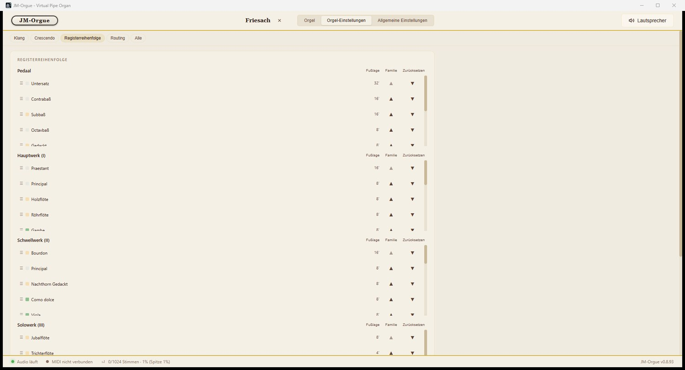
Routing
Dieser Reiter verbindet Ihre Orgel mit Ihrer Ausrüstung. Oben steht pro Manual ein Block:
- Kanal: der MIDI-Kanal, auf den das Manual hört („Alle“ = jeder Kanal). Lernen bestimmt Kanal und Bereich, indem Sie zuerst die tiefste und dann die höchste Taste spielen; liegen diese zu dicht beieinander, warnt das Programm, statt einen Bereich von nur wenigen Tasten einzustellen. Senden alle Ihre Manuale auf demselben Kanal, geben Sie jedem Gerät einen festen Kanal unter Allgemeine Einstellungen → MIDI (Kapitel 8).
- Transp: in Halbtönen transponieren. Bereich: tiefste und höchste Taste. Kurze Oktave: In der untersten Oktave klingt die E-Taste als C, Fis als D und Gis als E, wie an einer historischen Orgel; C, Cis, D und Dis tun dort nichts, der Rest der Klaviatur bleibt unverändert. Lernen Sie zuerst den Tastenbereich an: Die unterste Oktave beginnt beim ersten E ab der tiefsten Taste.
- Schwellkasten: schaltet den Schwellkasten dieses Manuals ein; es erscheinen dann Schaltflächen, um den Tritt anzulernen, die Mindestlautstärke und die Grenzfrequenz eines geschlossenen Kastens einzustellen. Standard sind −20 dB und 1500 Hz: Der Tritt wirkt dann in Dezibel gleichmäßig über den ganzen Weg, wie in Hauptwerk, und der Klang wird bei geschlossenem Kasten etwas dumpfer. Scheint der Tritt unten wenig zu bewirken, wählen Sie eine höhere Grenzfrequenz; soll ein geschlossener Kasten leiser sein, eine niedrigere Mindestlautstärke (bis −24 dB). Der Tritt lässt sich auch direkt vom Orgelbildschirm aus lernen: Rechtsklick auf die grüne LED-Leiste neben dem Manualnamen — oder 2 Sekunden lang auf einem Touchscreen halten — und derselbe „Tritt geschlossen / Tritt offen“-Dialog erscheint.
- Windversorgung: zu welcher Windgruppe das Manual gehört.
- Panorama und Ausgänge: der Platz im Stereobild und die Ausgangskanäle Ihres Audio-Interfaces, auf denen das Manual klingt. Zwei aufeinanderfolgende Ausgänge bilden ein Stereopaar; ein einzelner Kanal klingt mono.
- C/Cis: verteilt die Pfeifen auf zwei Seiten, wie die C- und Cis-Laden einer echten Orgel; die globale Stärke und der Abfall stehen im Block darüber.
- Tremulant LFO: Hat das Set keine echten Tremulantaufnahmen, berechnet das Programm den Tremulanten. Geschwindigkeit, Amplitude und Tonhöhe stellen Sie hier ein.
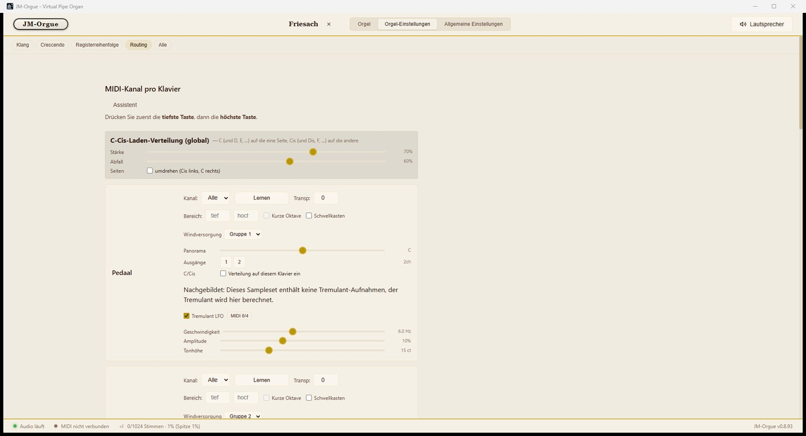
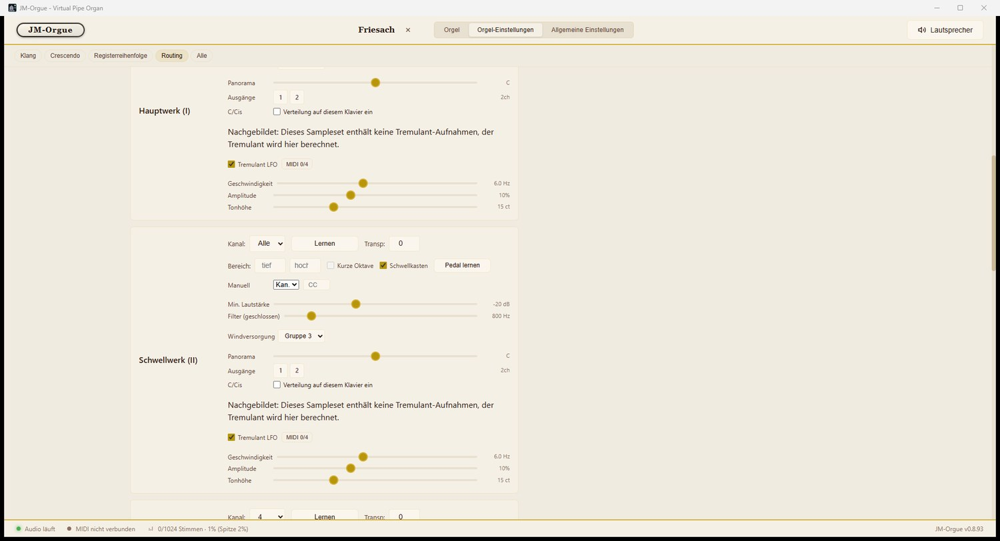
Darunter steht Audioausgabe Hintergrundgeräusche: Für jede Geräuschart wählen Sie, welche Ausgänge sie nutzt. Motor ist das Motorgeräusch; Umgebungsgeräusch und Mechanikklicks gilt für das Raumrauschen und die Klicks von Registern und Tasten; Sets mit Effektregistern (Zimbelstern, Nachtigall und dergleichen) und Tremulantgeräusch bekommen eine eigene Zeile. Das ist vor allem bei mehr als zwei Ausgängen wichtig, wenn die Manuale auf anderen Kanälen klingen als dem Standard 1–2. Direkt darunter:
- Durchgehende Klaviatur: Tasten außerhalb des aufgenommenen Bereichs eines Registers spielen die nächstgelegene Pfeife, auf die richtige Tonhöhe verschoben, statt zu schweigen. So spielt eine Tastatur mit 61 Tasten auf einem Set mit weniger Tönen weiter. Bass- und Diskanthälften eines geteilten Registers (Trompete 8 B/D, Cornet D, Mixtur Bass …) hören am Teilungspunkt auf — der Diskant läuft oben weiter, der Bass unten, aber sie überschneiden sich nie.
- Pfeifen automatisch nachstimmen: stimmt die Pfeifen anhand ihrer gemessenen Tonhöhe nach und behält dabei absichtlich schwebende Register. Standardmäßig an.
- Tonhöhe-Korrektur: alles zusammen höher oder tiefer in Cent (Null setzt sie zurück).
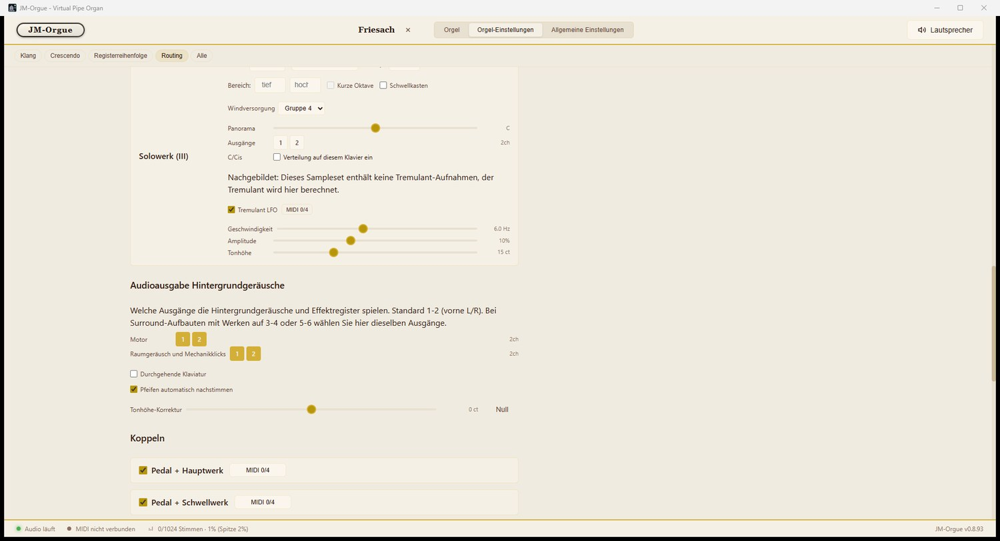
Weiter unten stehen Koppeln (ein- oder ausschalten, mit einer MIDI-Taste pro Koppel) und Zusätzliche Koppeln: Koppeln, die nicht im Sample-Set stehen, sich aber aus der Klaviaturaufteilung ergeben; haken Sie an, was Sie zusätzlich wollen, und sie erscheinen sofort in der Koppelleiste. MIDI-Zuordnungen ist eine einzige Liste aller MIDI-Zuordnungen dieser Orgel, die Sie dort von Hand ändern, entfernen oder hinzufügen können. Ganz unten lässt .mid öffnen die Orgel eine MIDI-Datei abspielen.
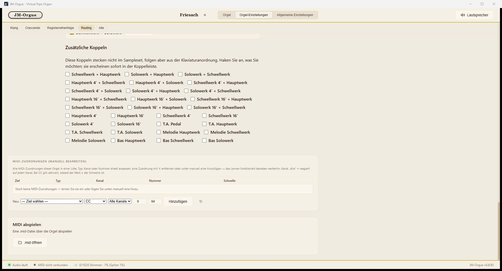
8. Allgemeine Einstellungen
Diese Einstellungen gelten für das ganze Programm. Die Reiter sind Audioausgabe, Sample-Fix, MIDI, Tasten anlernen, Darstellung und Update und Feedback.
Audioausgabe
- Audio-Treiber und Gerät: Für die geringste Latenz wählen Sie ASIO (zum Beispiel den Treiber Ihres Audio-Interfaces); WASAPI arbeitet mit der Standard-Windows-Soundkarte. Die Zeile „Aktuell“ darunter zeigt, was gerade klingt.
- Testsignal: Klicken Sie auf eine Kanalnummer, um Ton genau auf diesen Ausgang zu schicken, damit Sie hören, welcher Stecker zu welchem Lautsprecher gehört.
- Polyphonie und Rechenkerne fürs Mischen: die maximale Zahl gleichzeitig klingender Pfeifen und die Zahl der Prozessorkerne, auf die die Mischarbeit verteilt wird. Die Standardwahl passt zu Ihrem Computer; die Lastanzeige zeigt die Wirkung.
- Stereo-Samples in Stereo wiedergeben: behält das Stereobild von Stereoaufnahmen. Aus bedeutet einen Mono-Mix und halbiert den Speicherbedarf solcher Sets.
- Startpuffer je Aufnahme: wie viel jeder Pfeifenaufnahme sofort im Speicher liegt: 200 ms, 300 ms, 500 ms, 1 s oder 2 s (Standard). Ein kürzerer Puffer spart viel Speicher und Ladezeit; der Rest wird während des Spielens nachgeladen. Die Wahl wirkt nach dem erneuten Laden der Orgel. Nach genügend geladenen Aufnahmen steht darunter eine Empfehlung für diesen PC, auf Basis der gemessenen Ladezeiten; mit Übernehmen übernimmst du sie. Es ändert sich nichts von selbst.
- Puffergröße: kleiner bedeutet weniger Latenz, belastet Ihren Computer aber mehr. Anwenden aktiviert die Wahl.
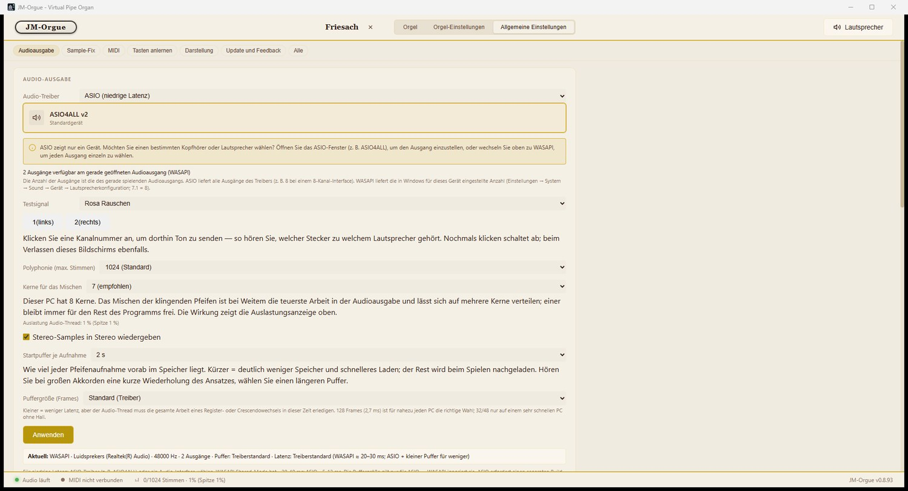
Mehr unter Audio-Ausgabe
- Bass an einen Subwoofer (Bassmanagement): nimmt die tiefen Frequenzen aus den Hauptkanälen und schickt sie summiert an einen Subwoofer-Ausgang (ein Linkwitz-Riley-Filter vierter Ordnung). Du wählst den Subwoofer-Ausgang, die Trennfrequenz (Hz) (30 bis 250 Hz) und den Pegel des Subwoofers (dB). Standardmäßig aus; aus kostet nichts.
- Speicherlimit folgt dem freien Speicher: Die Obergrenze für vollständig geladene Samples folgt dem Speicher, der beim Laden einer Orgel frei ist.
- Echtzeit-Priorität für das Mischen: gibt den Misch-Arbeitern hohe Priorität, damit das Audio nicht stockt, wenn viel anderes läuft. Unter dem Kontrollkästchen steht, was aktiv ist.
- Hinter jeder Auswahl von Startpuffer je Aufnahme steht der Speicher, den die geladene Orgel dann vorab braucht, zum Beispiel „500 ms · 2,8 GB“.
- Samples im Speicher: 16-Bit kompakt (Standard) speichert Samples, die exakt in 16 Bit passen, auch als 16 Bit, ohne Klangunterschied: halb so viel Speicher für solche Sets. 16- und 24-Bit kompakt spart auch bei 24-Bit-Sets ein Viertel, kostet aber merklich mehr Rechenaufwand; 32-Bit (wie bisher) schaltet es aus. Wirkt nach dem erneuten Laden der Orgel.
- Festplatten-Cache für dekodierte Samples (standardmäßig an): Aufnahmen, die aufwendig zu erzeugen sind, etwa WavPack oder Aufnahmen, die auf die Samplerate des Ausgangs umgerechnet werden, werden nach dem ersten Mal auf der Festplatte gespeichert und danach viel schneller geladen. Sie klingen genau gleich. Mit Maximum stellst du die Größe ein, darunter steht, wie viel belegt ist, und Cache leeren leert ihn.
Ausgabeprofile speichern zwei vollständige Ausgabeeinstellungen, zum Beispiel Lautsprecher über ASIO und Kopfhörer über WASAPI, einschließlich der Kanalwahl pro Manual. Wählen Sie den gewünschten Ausgang, klicken Sie bei Lautsprecher oder Kopfhörer auf Aktuelle Auswahl speichern, und wechseln Sie danach mit der Schaltfläche Lautsprecher oben rechts oder mit einer angelernten MIDI-Taste. Das aktive Profil ist markiert.
Die Korrektur für Kopfhörer oder Lautsprecher wendet eine Klangkorrektur auf den Ausgang selbst an (nicht auf die Orgel): Wählen Sie, für welches Profil sie gilt, schalten Sie sie ein und wählen Sie ein Preset aus der AutoEq-Liste, oder importieren bzw. exportieren Sie eine eigene Korrektur.
Darunter stehen die Optionen, das Programm automatisch mit Windows zu starten, die zuletzt geöffnete Orgel automatisch zu laden, das Kreuz auf einem zusätzlichen Bildschirm die ganze Software beenden zu lassen und die letzte Registrierung wiederherzustellen. Das Automatische MIDI-Archiv zeichnet im Hintergrund alles auf, was Sie spielen, als .mid-Datei pro Sitzung: Es startet bei der ersten Note und stoppt nach einer Stille.
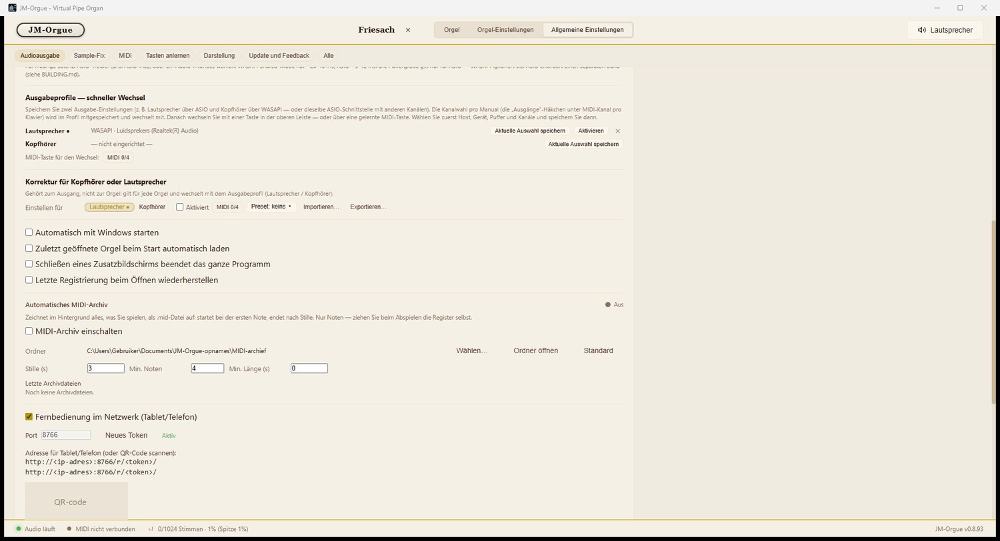
Mit der Fernbedienung im Netzwerk (Tablet/Telefon) bedienen Sie die Orgel von einem Tablet oder Telefon im selben WLAN. Das Programm zeigt eine Adresse und einen QR-Code zum Scannen, und Sie wählen, welche Teile und welche Manuale auf dem externen Bildschirm erscheinen. Beim ersten Mal fragt die Windows-Firewall, ob JM-Orgue Verbindungen empfangen darf: Wählen Sie „Zugriff zulassen“ für private Netzwerke.
Unten steht die Abtastrate. Sie folgt der Soundkarte selbst: Unter ASIO stellen Sie sie im Panel des Treibers ein, unter WASAPI in den Windows-Soundeinstellungen.
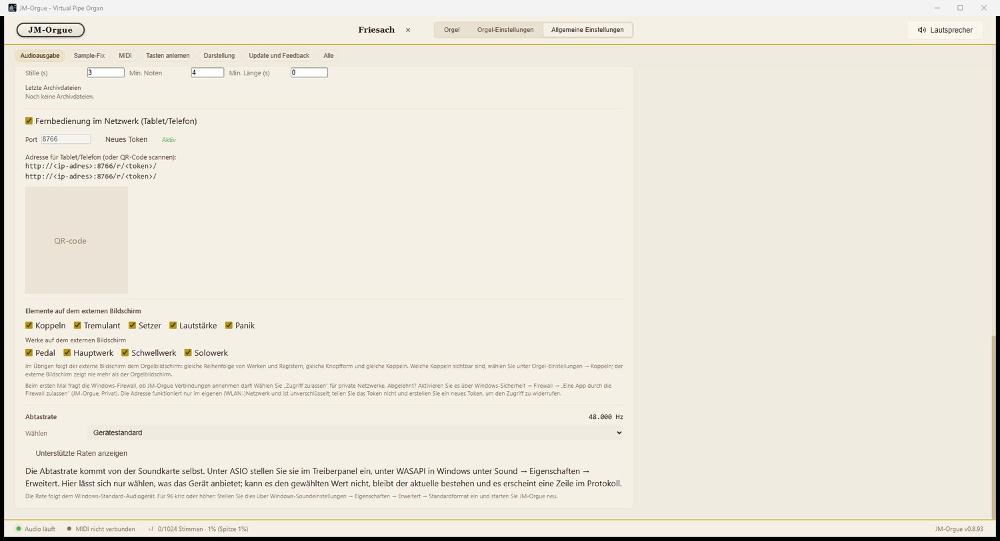
Sample-Fix
Zwei Werkzeuge, um die Samples der geladenen Orgel aufzuräumen. Anfangsstille findet und schneidet Stille am Anfang der Samples weg (die Stille-Schwelle in dB und den zu behaltenden Vorlauf stellen Sie selbst ein); Loops findet eine gute Sustain-Schleife, bindet einen Crossfade für einen nahtlosen Übergang ein und schreibt die Schleifenpunkte in die Datei, wahlweise nur für Dateien ohne Schleife. Mit Scannen sehen Sie zuerst, was sich ändern würde. Die Originale werden zuerst in einem Ordner _backup gesichert, bevor die Dateien überschrieben werden.
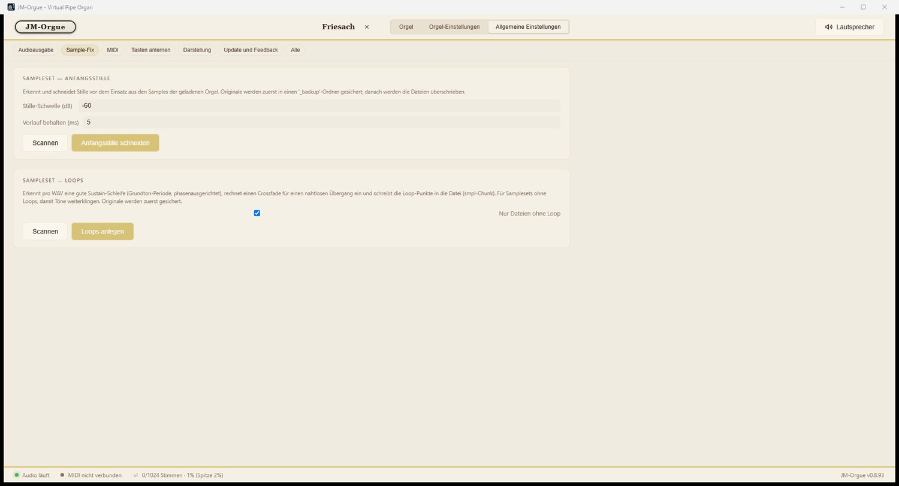
MIDI
MIDI-Eingang zeigt die angeschlossenen MIDI-Geräte (mit Geräte aktualisieren suchen Sie erneut). Pro Gerät können Sie einen festen Kanal wählen: Manuale, die alle auf Kanal 1 senden, bedienen so trotzdem verschiedene Werke, ohne dass Sie in jeder Sitzung Kanäle wiederherstellen müssen. Steht ein Gerät auf Standardgerät, ändert sich nichts. Unter Bluetooth MIDI suchen Sie mit Scannen nach drahtlosen Geräten; auch die Lernschaltflächen, die auf eine einzelne Taste reagieren, hören auf ein Bluetooth-Manual. Die Rückmeldung (MIDI-Out) lässt Ihren Spieltisch mit der Registrierung mitleuchten: Wählen Sie das Protokoll (Registerlampen über Note On/Off, ein Hauptwerk-Textdisplay oder einen Johannus-/Content-Spieltisch), den MIDI-Ausgang, den Kanal und die Basisnote. Jedes Register erhält dann automatisch eine Notennummer ab der Basisnote, oder Sie lernen mit Pro Register lernen… die echte Spieltischtaste pro Register an.
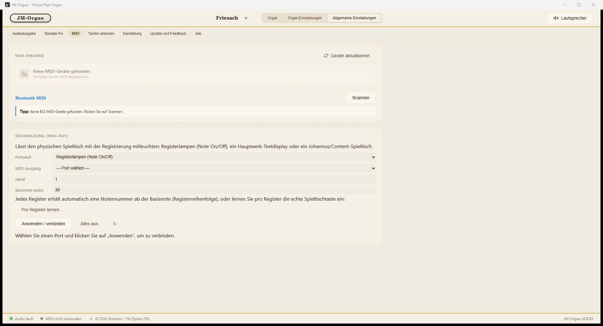
Tasten anlernen
Hier lernen Sie die festen Spieltischtasten (Pistons) an: Stimmer, SET, Preset-Schritte, Speicherebenen und Computer herunterfahren. Die Zifferntasten 0–9 lernen Sie auf der Setzerleiste selbst an (Rechtsklick oder 3 Sekunden gedrückt halten).
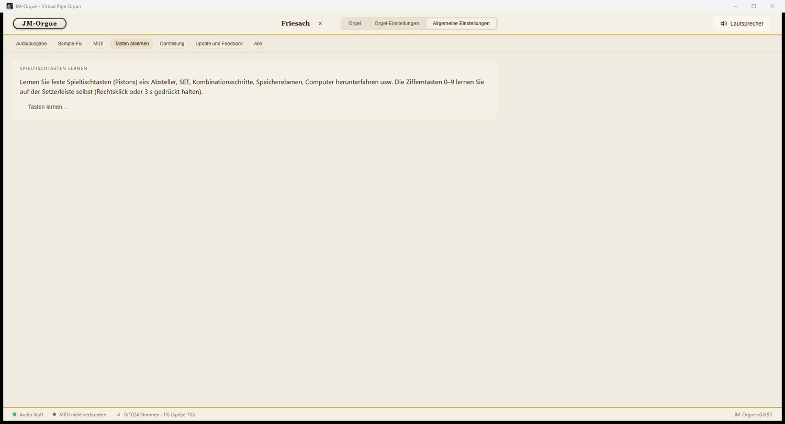
Darstellung
Wählen Sie die Sprache des Programms (Nederlands, English, Français, Deutsch, Polski, Italiano und Español) und das Erscheinungsbild: fünf fertige Farbpresets (Standard, Klassisches Holz, Modern minimalistisch, Nacht und Abend), oder stellen Sie eigene Farben zusammen, geben Sie ihnen einen Namen und exportieren Sie sie. Darunter passen Sie Schriftart, Größe und Stärke des Registertexts an, außerdem den Hintergrund.
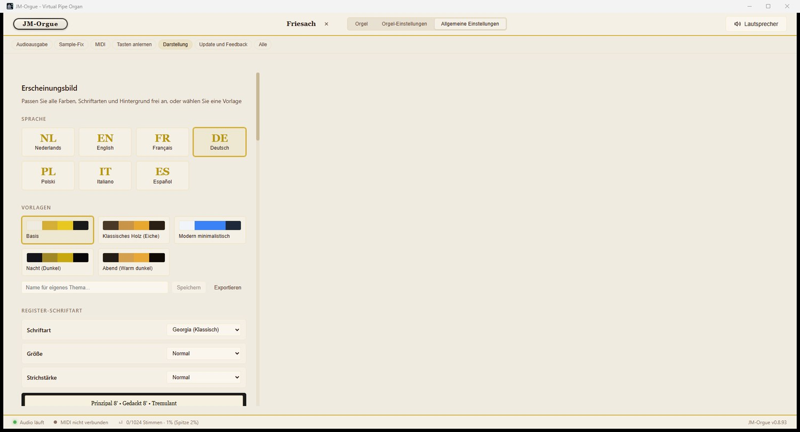
Update und Feedback
Hier finden Sie die Versionsnummer, die Quellenangaben zu den verwendeten Kopfhörer-Presets und Lautsprecherdaten und die Schaltflächen Feedback senden…, Über GitHub (Issues) und Auf Updates prüfen.
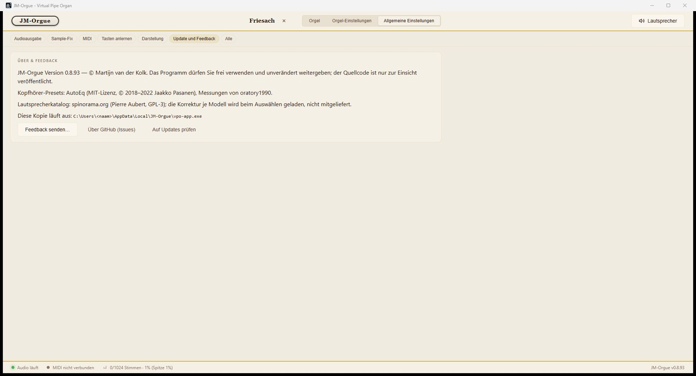
9. Akustische Konfiguration eines Sets
Eine Orgeldefinition kann auf eine zusätzliche Datei verweisen, JM-ACOUSTICS.json, die die Akustik des Sets beschreibt: Schwellkästen, die an einem Rank statt an einem Manual hängen, Impulsantworten für den Hall, Mischrouten und Ausgänge. Hat Ihr Set eine solche Datei, erkennen Sie das an einem zusätzlichen Block unter Orgel-Einstellungen → Klang.
- Das Programm liest die Datei und prüft sie: die Dateigröße, ob alle Verweise stimmen, ob die Pfade im Orgelordner bleiben und ob die Pfeifenzuordnungen zur geladenen Definition passen. Stimmt etwas nicht, spielt die Orgel einfach mit der normalen Definition, und der Block nennt den Grund, warum die Konfiguration nicht geladen wurde.
- Schwellkästen je Rank: Ranks, die die Datei in einen Kasten stellt, erhalten einen eigenen Schwellkasten mit eigenem Schwelltritt, unabhängig vom Manual, auf dem sie gespielt werden. Ein Rank, den zwei Manuale nutzen, folgt so immer demselben Kasten. Den Tritt lernen Sie unter Routing (Pedal lernen) oder im Assistenten an.
- Impulsantworten aus dem Set stehen unter dem Block, mit Kanälen und Dauer. Mit Als Hall verwenden übernehmen Sie eine als Faltungshall. Die Rolle der Kanäle in solchen Aufnahmen ist nicht festgelegt; das Programm nutzt die ersten beiden als Stereopaar.
- Mischrouten, Ausgangsbusse und Effektübergänge aus der Datei werden vorerst nicht automatisch angewendet; die normale Definition bleibt maßgebend.
- Eigener Hall zum Set: Ein Set kann eine Hall-Impulsantwort mitliefern, mit einem Pfad relativ zum Set-Ordner. JM-Orgue sucht die Impulsantwort dann im Ordner des Sets, sodass der Hall auf jedem Computer funktioniert, wo auch immer das Set installiert ist. Im Protokoll steht, ob die Impulsantwort des Sets geladen oder nicht gefunden wurde.
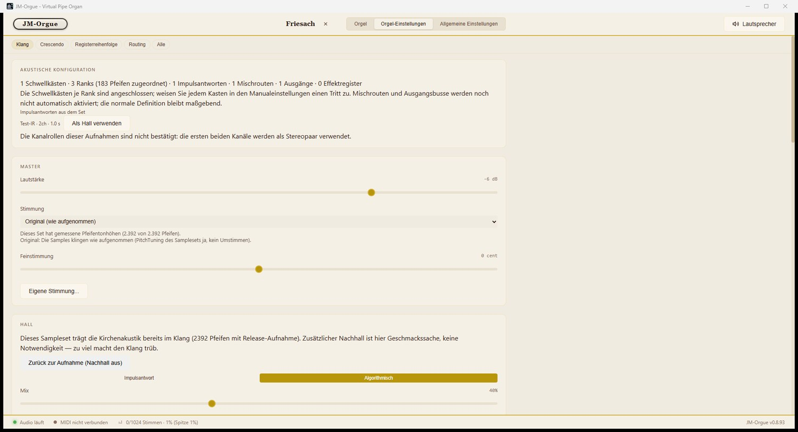
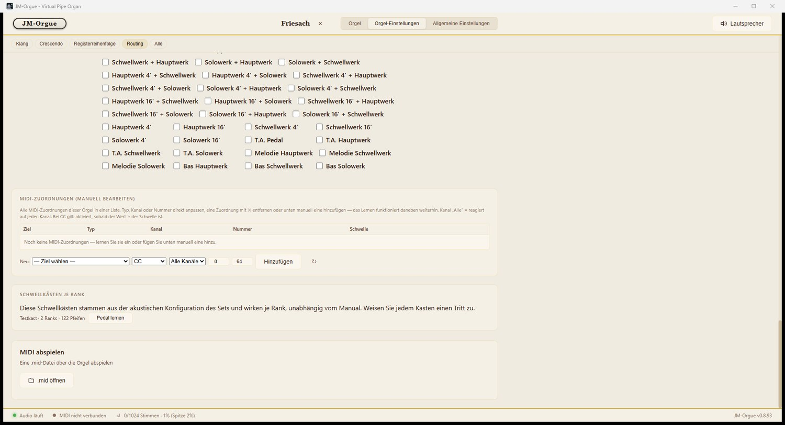
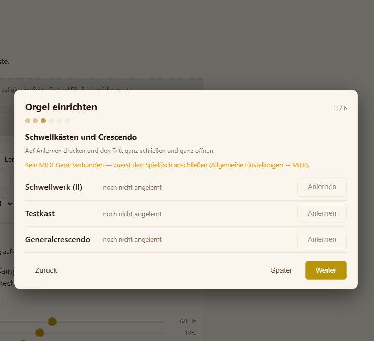
10. Tastenkürzel und Tipps
| Taste | Funktion |
|---|---|
| F1 F2 F3 | Orgel, Orgel-Einstellungen und Allgemeine Einstellungen. |
| F4 | Spieltisch-Designer öffnen (Hauptfenster). |
| F5 | Orgelbauer öffnen: Register aus einem bis 64 Sample-Sets zusammenstellen. |
| F11 | Vollbild (Spieltischmodus) ein oder aus. |
| Esc | Vollbild beenden. |
| Rechtsklick oder 3 s gedrückt halten | Auf einer Schaltfläche der Setzerleiste: diese Schaltfläche mit einer Spieltischtaste verbinden (MIDI anlernen). |
| Doppelklick auf die Lautstärke | Gesamtlautstärke zurück auf den Standardwert. |
| Karte 3 s gedrückt halten | In der Bibliothek: das Foto dieser Karte erneut suchen. |
| Y…M und Q…I | Computertastatur als Manual: zwei Oktaven (auf einer deutschen Tastatur die Tasten der Z/Y-Reihe). Umschalt verschiebt eine Oktave nach oben, Alt eine Oktave nach unten, auch zusammen. |
| Strg+N / O / S | Im Notationsfenster: neues Stück, öffnen, speichern. |
- Alle Einstellungen werden bei jeder Orgel gespeichert, auch wenn Sie die Orgel schließen oder das Programm beenden.
- Für einen festen Spieltisch: Schalten Sie Automatisch mit Windows starten und Zuletzt geöffnete Orgel automatisch laden ein und nutzen Sie den Spieltischmodus.
- Bei mehr als zwei Ausgängen: Wählen Sie die Ausgänge pro Manual unter Routing und danach dieselben Ausgänge für die Hintergrundgeräusche.
11. Problemlösung und Feedback
| Problem | Was Sie versuchen können |
|---|---|
| Kein Ton | Läuft der Motor? Steht unten „Audio aktiv“? Ist unter Audioausgabe das richtige Gerät eingestellt, und passen die Ausgänge pro Manual zu Ihrem Audio-Interface? Nutzen Sie das Testsignal, um die Ausgänge zu hören. |
| Die Tastatur reagiert nicht | Unten steht „MIDI nicht verbunden“, solange es kein MIDI-Gerät gibt. Prüfen Sie Allgemeine Einstellungen → MIDI und den MIDI-Kanal pro Manual unter Routing. |
| Die Orgel klingt verstimmt | Prüfen Sie, ob Pfeifen automatisch nachstimmen an ist, und wählen Sie unter Klang die Stimmung „Original“ oder die gewünschte Temperatur. |
| Knacken oder Stottern | Verringern Sie die Polyphonie, ziehen Sie weniger Register, schalten Sie den Hall aus oder wählen Sie einen größeren Puffer. Ein kurzer Startpuffer braucht eine schnelle Festplatte; wählen Sie sonst einen längeren. |
| Zu wenig Speicher | Wählen Sie einen kürzeren Startpuffer, schalten Sie Stereo-Samples aus oder Hörpositionen, die Sie nicht nutzen. |
| Hintergrundgeräusche oder Effektregister sind nicht auf dem richtigen Lautsprecher zu hören | Wählen Sie unter Routing bei „Audioausgabe Hintergrundgeräusche“ dieselben Ausgänge wie für die Manuale. |
| Pfeifen bleiben stumm und oben steht eine Meldung zu WavPack oder FLAC | WavPack liest das Programm selbst; bleibt die Meldung stehen, handelt es sich um Dateien, die nicht lesbar sind (FLAC, Hybrid- oder mehrkanaliges WavPack). Wandeln Sie das Set in gewöhnliches WAV um oder bitten Sie den Hersteller um eine unkomprimierte Version. |
| Der Schwelltritt bewirkt unten wenig und oben viel | Erhöhen Sie unter Routing beim Schwellkasten die Grenzfrequenz bei geschlossenem Kasten (Standard 1500 Hz) oder senken Sie die Mindestlautstärke. |
| Eine Orgel lädt versehentlich oder zu lange | Drücken Sie Abbrechen im Ladebildschirm; die vorherige Orgel klingt weiter. |
Feedback senden… (Allgemeine Einstellungen → Update und Feedback) erstellt eine Nachricht mit Ihrer Meldung und den Logdateien der letzten Sitzungen, damit der Entwickler sehen kann, was passiert ist. Sie können Ihre Meldung auch auf der Projektseite bei GitHub einstellen.